clinic-triage-deck-reorder-tag PASS 1.0
grade deckintent transformdomain healthcaredifficulty d5ambiguity a1voice politeapps libreoffice_impress + files + terminalbatch wave2-main-s0
Please rebuild /home/user/Desktop/triage_rounds.pptx for the ward briefing: keep the title slide first, then order the remaining slides by acuity Critical, Urgent, Routine, and within each acuity alphabetically by title. Prefix each of those titles with its acuity and a dash.
task config + evaluator
{
"config": [
{
"type": "execute",
"parameters": {
"command": "mkdir -p '/home/user/Desktop' && rm -f '/tmp/__fixture.b64' && printf %s '' >> '/tmp/__fixture.b64' && base64 -d '/tmp/__fixture.b64' > '/home/user/Desktop/triage_rounds.pptx'",
"shell": true
}
}
],
"evaluator": {
"func": "compare_pptx_files",
"result": {
"type": "vm_file",
"path": "/home/user/Desktop/triage_rounds.pptx",
"dest": "clinic-triage-deck-reorder-tag-result.pptx"
},
"expected": {
"type": "cloud_file",
"path": "http://127.0.0.1:8021/wave2-main-s0/files/clinic-triage-deck-reorder-tag/gold/triage_rounds.pptx",
"dest": "clinic-triage-deck-reorder-tag-gold-a1344eba.pptx"
},
"postconfig": [
{
"type": "activate_window",
"parameters": {
"window_name": "triage_rounds.pptx - LibreOffice Impress",
"strict": true
}
},
{
"type": "sleep",
"parameters": {
"seconds": 0.5
}
},
{
"type": "execute",
"parameters": {
"command": [
"python",
"-c",
"import pyautogui; pyautogui.hotkey(\"ctrl\", \"s\");"
]
}
},
{
"type": "sleep",
"parameters": {
"seconds": 0.5
}
}
]
}
}
step 1 11:00:25
THINKINGLet me start by taking a screenshot to see the current state of the screen.
The task is to rebuild a PowerPoint file at /home/user/Desktop/triage_rounds.pptx. I need to:
1. Keep the title slide first
2. Order the remaining slides by acuity: Critical, Urgent, Routine
3. Within each acuity, alphabetically by title
4. Prefix each of those titles with its acuity and a dash
First, I need to understand the current contents of the file. Let me open it or examine it. I think the best approach would be to use a terminal to inspect the file structure, since I need to understand what slides exist, their titles, and their acuity levels.
Let me take a screenshot first.
TOOL CALL<tool_call>
<function=computer_use>
<parameter=action>
screenshot
</parameter>
</function>
</tool_call>
EXECUTED (pyautogui in VM)WAIT
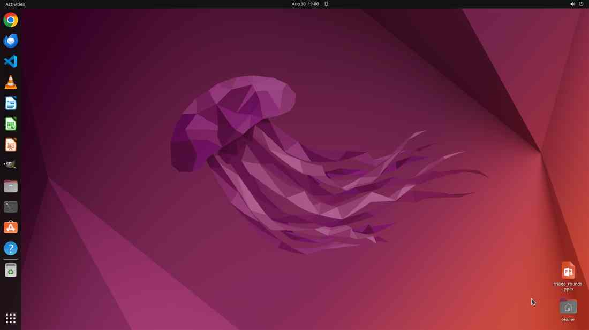
step 2 11:00:35
THINKINGLet me start by examining the PowerPoint file to understand its contents. I'll use a terminal to inspect it. Let me open a terminal first.
I'll click on the terminal icon in the taskbar.
ACTIONI'll start by examining the PowerPoint file to understand its structure. Let me open a terminal.
TOOL CALL<tool_call>
<function=computer_use>
<parameter=action>
left_click
</parameter>
<parameter=coordinate>
[17, 621]
</parameter>
</function>
</tool_call>
EXECUTED (pyautogui in VM)pyautogui.click(32, 671)
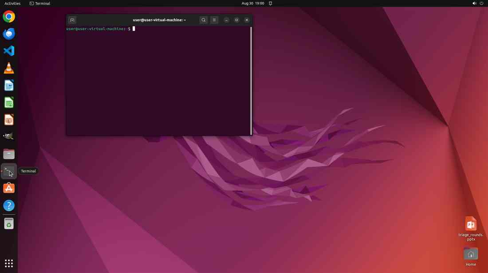
step 3 11:00:44
THINKINGA terminal is open. Let me first check if python-pptx is available and inspect the file. Let me first look at the file and understand its structure. Let me check the file.
ACTIONA terminal is open. Let me examine the PowerPoint file structure first.
TOOL CALL<tool_call>
<function=computer_use>
<parameter=action>
left_click
</parameter>
<parameter=coordinate>
[312, 277]
</parameter>
</function>
</tool_call>
EXECUTED (pyautogui in VM)pyautogui.click(599, 299)
step 4 11:00:51
THINKINGLet me type a command to check if python-pptx is available and inspect the file.
TOOL CALL<tool_call>
<function=computer_use>
<parameter=action>
type
</parameter>
<parameter=text>
python3 -c "import pptx; print(pptx.__version__)"
</parameter>
</function>
</tool_call>
EXECUTED (pyautogui in VM)pyautogui.typewrite("python3 -c \"import pptx; print(pptx.__version__)\"")
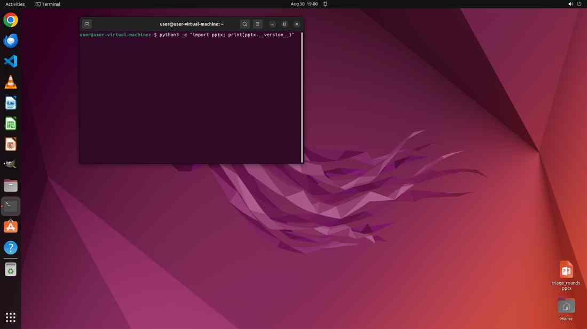
step 5 11:00:58
THINKINGLet me press Enter to execute.
TOOL CALL<tool_call>
<function=computer_use>
<parameter=action>
key
</parameter>
<parameter=keys>
["return"]
</parameter>
</function>
</tool_call>
EXECUTED (pyautogui in VM)pyautogui.press("return")
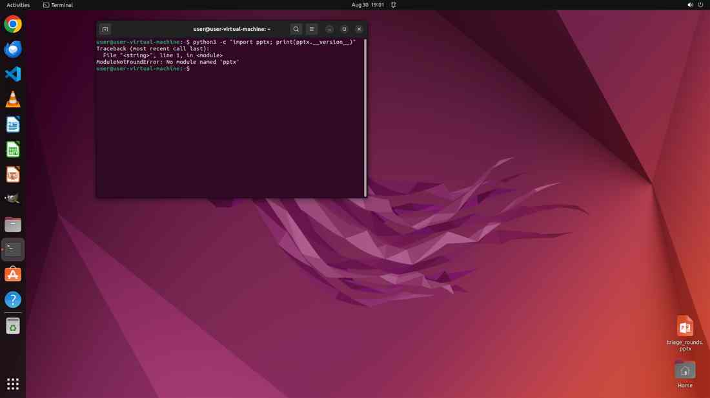
step 6 11:01:11
THINKINGThe `pptx` module is not installed. Let me install it via pip. But first, let me understand the file structure by extracting the pptx file (which is a zip) and examining the XML. Actually, let me first install python-pptx which will make the task much easier.
Let me install it with pip.
ACTIONThe `pptx` module isn't installed. Let me install it via pip.
TOOL CALL<tool_call>
<function=computer_use>
<parameter=action>
type
</parameter>
<parameter=text>
pip install python-pptx 2>&1 | tail -5
</parameter>
</function>
</tool_call>
EXECUTED (pyautogui in VM)pyautogui.typewrite("pip install python-pptx 2>&1 | tail -5")

step 7 11:01:23
THINKINGLet me wait for the pip install to complete.
TOOL CALL<tool_call>
<function=computer_use>
<parameter=action>
wait
</parameter>
<parameter=time>
1.0
</parameter>
</function>
</tool_call>
EXECUTED (pyautogui in VM)WAIT

step 8 11:01:35
THINKINGStill processing. Let me wait more.
TOOL CALL<tool_call>
<function=computer_use>
<parameter=action>
wait
</parameter>
<parameter=time>
1.0
</parameter>
</function>
</tool_call>
EXECUTED (pyautogui in VM)WAIT
step 9 11:01:47
THINKINGIt seems the pip install is still running, but it's been a while. Let me wait a bit more. Actually, maybe the pip command hasn't produced output yet because I'm piping to tail -5 which only shows the last 5 lines after it completes. Let me wait more.
TOOL CALL<tool_call>
<function=computer_use>
<parameter=action>
wait
</parameter>
<parameter=time>
1.0
</parameter>
</function>
</tool_call>
EXECUTED (pyautogui in VM)WAIT
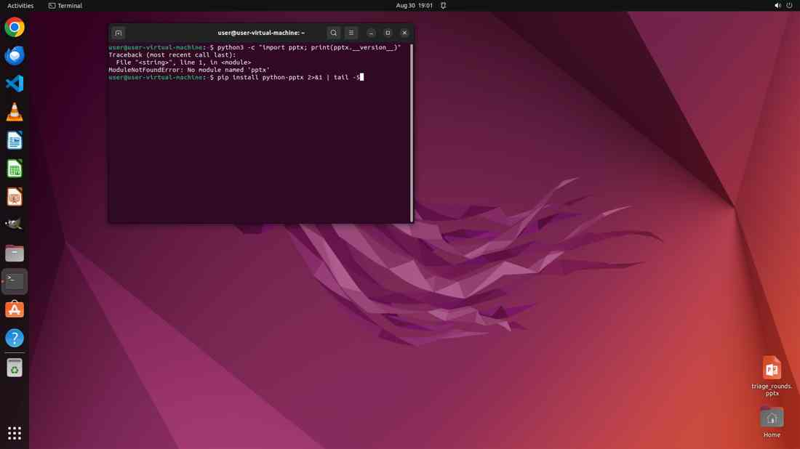
step 10 11:02:03
THINKINGIt's still running. The tail -5 will buffer output. Let me wait more.
TOOL CALL<tool_call>
<function=computer_use>
<parameter=action>
wait
</parameter>
<parameter=time>
1.0
</parameter>
</function>
</tool_call>
EXECUTED (pyautogui in VM)WAIT

step 11 11:02:17
THINKINGIt's been a while. The pip install may be slow because it needs to build dependencies, or it might not have internet. Let me wait a bit more.
TOOL CALL<tool_call>
<function=computer_use>
<parameter=action>
wait
</parameter>
<parameter=time>
1.0
</parameter>
</function>
</tool_call>
EXECUTED (pyautogui in VM)WAIT

step 12 11:02:30
THINKINGThis is taking quite long. The pip install might be slow or there could be a network issue. Let me wait a bit more.
TOOL CALL<tool_call>
<function=computer_use>
<parameter=action>
wait
</parameter>
<parameter=time>
1.0
</parameter>
</function>
</tool_call>
EXECUTED (pyautogui in VM)WAIT
step 13 11:03:04
THINKINGThe pip install is taking a very long time. It's been over 15 seconds. The tail -5 output means it will only show output at the end. This could be a network issue, or the install could be legitimately slow. Let me wait more.
Actually, let me reconsider. The output is buffered by `tail -5`, so I won't see any progress. Let me wait a bit longer, and if it's not done, I'll try a different approach. Let me wait more.
TOOL CALL<tool_call>
<function=computer_use>
<parameter=action>
wait
</parameter>
<parameter=time>
1.0
</parameter>
</function>
</tool_call>
EXECUTED (pyautogui in VM)WAIT
step 14 11:03:24
THINKINGIt's been about 20+ seconds and it's still running. The pip install could be slow due to building lxml from source (a dependency). This can take a couple of minutes. Let me wait more. Actually, let me reconsider my approach.
While waiting, I could inspect the pptx file's structure directly using unzip since a .pptx is a zip archive. But I don't want to run another command while this is running. Let me just wait a bit more for the pip install.
Let me wait more.
ACTIONThe pip install is still running. Let me wait a bit more as it may be building dependencies.
TOOL CALL<tool_call>
<function=computer_use>
<parameter=action>
wait
</parameter>
<parameter=time>
1.0
</parameter>
</function>
</tool_call>
EXECUTED (pyautogui in VM)WAIT
step 15 11:03:38
THINKINGA notification popped up about backing up files. Let me dismiss it and wait for pip. The notification is at the top. Let me just wait for the pip to complete. Let me click somewhere to dismiss the notification or just wait.
Actually the notification is just a system notification. Let me wait more for the pip install.
ACTIONA notification appeared. Let me continue waiting for the pip install to complete.
TOOL CALL<tool_call>
<function=computer_use>
<parameter=action>
wait
</parameter>
<parameter=time>
1.0
</parameter>
</function>
</tool_call>
EXECUTED (pyautogui in VM)WAIT

step 16 11:03:57
THINKINGStill running. It's been over 30 seconds. The pip install of python-pptx requires lxml which may need to be compiled. Let me wait a bit more. Actually, let me reconsider whether the network is even available. If there's no network, pip will fail relatively quickly with a timeout. Since it's still running after 30s, it might be downloading or building.
Let me wait more.
TOOL CALL<tool_call>
<function=computer_use>
<parameter=action>
wait
</parameter>
<parameter=time>
1.0
</parameter>
</function>
</tool_call>
EXECUTED (pyautogui in VM)WAIT
step 17 11:04:09
THINKINGIt's still running after ~45 seconds. The tail -5 is buffering. Let me wait a bit more. This could be building lxml from source which is slow. Let me wait another 30 seconds.
ACTIONThe install is taking a while, likely building dependencies. Let me continue waiting.
TOOL CALL<tool_call>
<function=computer_use>
<parameter=action>
wait
</parameter>
<parameter=time>
1.0
</parameter>
</function>
</tool_call>
EXECUTED (pyautogui in VM)WAIT
step 18 11:04:30
THINKINGIt's been about 1 minute now. The pip install is still running. This might be because lxml is being built from source, which takes several minutes. Let me wait more.
Actually, let me reconsider. Since python-pptx depends on lxml and Pillow, and these may need to be compiled, it could take several minutes. But I should verify the network is working. Let me be patient and wait more.
Actually, let me think of a different strategy that doesn't require python-pptx at all. A .pptx file is just a ZIP archive containing XML files. I can:
1. Unzip the pptx
2. Examine the slide XML files to understand titles and acuity
3. Reorder slides by editing presentation.xml (the sldIdLst)
4. Modify the title text in slide XML files to add the acuity prefix
5. Re-zip
But this is complex because slide order is defined in ppt/presentation.xml via the sldIdLst, and the relationship IDs link to the slide files. Reordering means reordering the sldId entries.
Actually, using python-pptx would be much cleaner. Let me be patient and wait for it to install. If it doesn't work (no network), I'll fall back to the manual XML approach.
Let me wait more.
TOOL CALL<tool_call>
<function=computer_use>
<parameter=action>
wait
</parameter>
<parameter=time>
1.0
</parameter>
</function>
</tool_call>
EXECUTED (pyautogui in VM)WAIT

step 19 11:05:00
THINKINGIt's been over a minute and a half now. This is taking quite long. The pip install with `| tail -5` buffers all output, so I only see the last 5 lines when it finishes. This is a problem for monitoring progress.
Let me think about this differently. Maybe the install is stuck or the network is slow. Let me be patient a bit longer, but if it doesn't finish, I'll interrupt and try the manual approach or check network.
Actually, let me just wait a bit more. python-pptx install with lxml from source can take 2-3 minutes. Let me wait another 30 seconds.
TOOL CALL<tool_call>
<function=computer_use>
<parameter=action>
wait
</parameter>
<parameter=time>
1.0
</parameter>
</function>
</tool_call>
EXECUTED (pyautogui in VM)WAIT
step 20 11:05:16
THINKINGIt's been about 2 minutes now. Still running. This is quite long. Let me wait a bit more, but I'm starting to suspect there might be a network issue, or it's genuinely building lxml. Let me wait another 30 seconds.
Actually, I realize I should just be patient. Building lxml can take 2-3 minutes. Let me wait.
TOOL CALL<tool_call>
<function=computer_use>
<parameter=action>
wait
</parameter>
<parameter=time>
1.0
</parameter>
</function>
</tool_call>
EXECUTED (pyautogui in VM)WAIT

step 21 11:05:33
THINKINGIt's been about 2.5 minutes now. This is taking unusually long. I'm concerned there may be a network issue, or the build is stuck. Let me wait just a bit more, and if it doesn't complete, I'll interrupt with Ctrl+C and try the manual XML approach which doesn't require python-pptx.
Let me wait another 30 seconds.
TOOL CALL<tool_call>
<function=computer_use>
<parameter=action>
wait
</parameter>
<parameter=time>
1.0
</parameter>
</function>
</tool_call>
EXECUTED (pyautogui in VM)WAIT

step 22 11:05:57
THINKINGIt's been about 3 minutes. This is taking way too long. I suspect there may be a network issue, or the pip is stuck. The `| tail -5` buffers everything so I can't see progress. Let me interrupt it with Ctrl+C and try a different approach.
Actually, wait - let me not interrupt it yet since it might be almost done. But 3 minutes is a long time. Let me press Enter to see if there's any output, or better, let me just wait a tiny bit more then interrupt if needed.
Actually, the best move is to interrupt and try without the tail buffer so I can see what's happening. Let me press Ctrl+C.
ACTIONThe install is taking unusually long. Let me interrupt it and check what's happening without the output buffer.
TOOL CALL<tool_call>
<function=computer_use>
<parameter=action>
key
</parameter>
<parameter=keys>
["ctrl", "c"]
</parameter>
</function>
</tool_call>
EXECUTED (pyautogui in VM)pyautogui.hotkey("ctrl", "c")
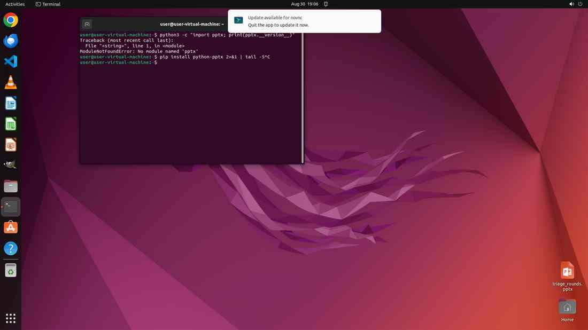
step 23 11:06:37
THINKINGI interrupted it with Ctrl+C. Now I have a fresh prompt. Let me first inspect the pptx file structure directly using unzip. This will help me understand the slides without needing python-pptx. Let me first check if the file exists and unzip it to a temp directory.
Let me first look at the file structure. I'll unzip the pptx to a temp folder.
Actually, let me reconsider the whole approach. I'll:
1. First inspect the pptx to understand its structure and content.
2. Then decide on the best way to rebuild.
Let me unzip and examine. First, let me look at the file.
Actually, let me reconsider whether to still use python-pptx. The issue is it took too long. It might have been stuck on something. But maybe it was just slow and almost done. However, I interrupted it.
Let me first inspect the file manually with unzip. That's fast and doesn't need network. Let me extract to /tmp.
ACTIONThe prompt is back. Let me first inspect the PowerPoint file's structure directly by extracting it, which doesn't require python-pptx.
TOOL CALL<tool_call>
<function=computer_use>
<parameter=action>
type
</parameter>
<parameter=text>
cd /tmp && rm -rf pptx_inspect && mkdir pptx_inspect && cd pptx_inspect && unzip -o /home/user/Desktop/triage_rounds.pptx >/dev/null && find . -name "*.xml" | sort
</parameter>
</function>
</tool_call>
EXECUTED (pyautogui in VM)pyautogui.typewrite("cd /tmp && rm -rf pptx_inspect && mkdir pptx_inspect && cd pptx_inspect && unzip -o /home/user/Desktop/triage_rounds.pptx >/dev/null && find . -name \"*.xml\" | sort")
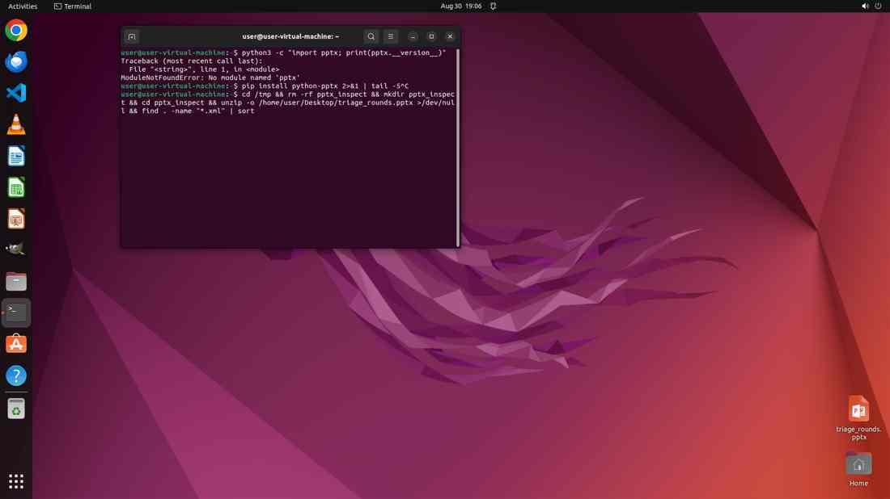
step 24 11:06:49
THINKINGThe command was typed but I need to press Enter. Wait, it seems the terminal didn't execute. Let me press Enter.
Actually, looking closely, the command is displayed but not executed yet. Let me press Enter.
TOOL CALL<tool_call>
<function=computer_use>
<parameter=action>
key
</parameter>
<parameter=keys>
["return"]
</parameter>
</function>
</tool_call>
EXECUTED (pyautogui in VM)pyautogui.press("return")
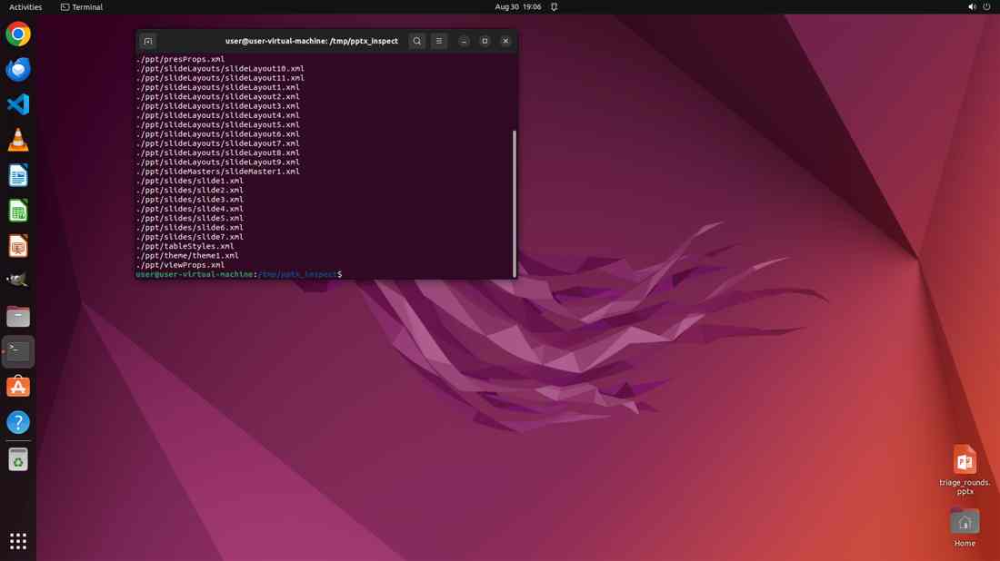
step 25 11:07:09
THINKINGNow I can see the structure. There are 7 slides:
- ./ppt/slides/slide1.xml
- ./ppt/slides/slide2.xml
- ./ppt/slides/slide3.xml
- ./ppt/slides/slide4.xml
- ./ppt/slides/slide5.xml
- ./ppt/slides/slide6.xml
- ./ppt/slides/slide7.xml
And there are slide layouts (slideLayout1-11), slideMaster1, presProps, tableStyles, theme1, viewProps.
So there are 7 slides total. The first is the title slide. Let me examine the content of each slide to find the titles and acuity levels.
Let me look at each slide's XML. But the XML might be hard to read. Let me extract the text from each slide. Let me look at the presentation.xml first to understand the slide order (sldIdLst).
Actually, the slide order in a pptx is defined by ppt/presentation.xml in the sldIdLst element, referencing rIds. Let me first check the presentation.xml and the relationships.
Let me look at presentation.xml.
ACTIONI can see 7 slides. Let me examine the presentation.xml to understand the slide order and relationships.
TOOL CALL<tool_call>
<function=computer_use>
<parameter=action>
type
</parameter>
<parameter=text>
cat ppt/_rels/presentation.xml.rels
</parameter>
</function>
</tool_call>
EXECUTED (pyautogui in VM)pyautogui.typewrite("cat ppt/_rels/presentation.xml.rels")
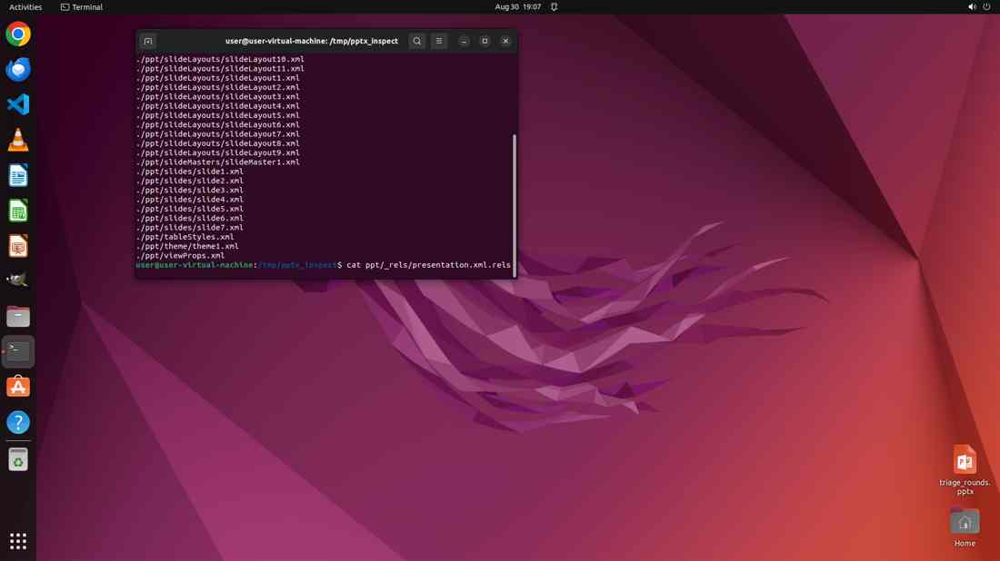
step 26 11:07:44
THINKINGThe terminal window is quite small. Let me maximize it first to make reading easier. Actually, let me just press Enter to run the command and see the output. But the output might be long and hard to read in this small window. Let me maximize the terminal first.
Actually, the command is typed but not yet executed. Let me maximize the terminal window first by double-clicking the title bar, then run the command. Actually the command is already typed. Let me just press Enter, then I'll deal with reading.
Actually, let me maximize the window first so I can read the output better. Let me click the maximize button. But the command is already typed in. If I click maximize, the command stays typed. Let me maximize first.
ACTIONLet me maximize the terminal window first for better readability, then run the command.
TOOL CALL<tool_call>
<function=computer_use>
<parameter=action>
double_click
</parameter>
<parameter=coordinate>
[325, 71]
</parameter>
</function>
</tool_call>
EXECUTED (pyautogui in VM)pyautogui.doubleClick(624, 76)
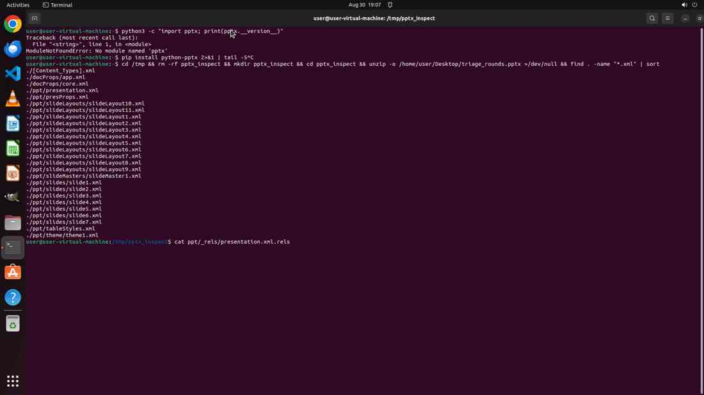
step 27 11:08:04
THINKINGThe terminal is now maximized. I can see the full file structure. The command "cat ppt/_rels/presentation.xml.rels" is typed but not executed. Let me press Enter.
ACTIONThe terminal is maximized now. Let me run the command to see the presentation relationships.
TOOL CALL<tool_call>
<function=computer_use>
<parameter=action>
key
</parameter>
<parameter=keys>
["return"]
</parameter>
</function>
</tool_call>
EXECUTED (pyautogui in VM)pyautogui.press("return")
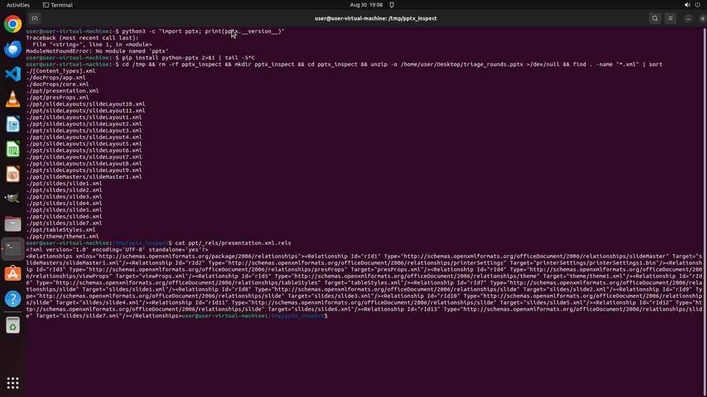
step 28 11:08:19
THINKINGNow I can see the presentation.xml.rels file. Let me parse it:
- rId1 → slideMasters/slideMaster1.xml
- rId2 → printerSettings/printerSettings1.bin
- rId3 → presProps.xml
- rId4 → viewProps.xml
- rId5 → theme/theme1.xml
- rId6 → tableStyles.xml
- rId7 → slides/slide1.xml (Type: .../slide)
- rId8 → slides/slide2.xml
- rId9 → slides/slide3.xml
- rId10 → slides/slide4.xml
- rId11 → slides/slide5.xml
- rId12 → slides/slide6.xml
- rId13 → slides/slide7.xml
So the relationship IDs for slides are:
- rId7 → slide1.xml
- rId8 → slide2.xml
- rId9 → slide3.xml
- rId10 → slide4.xml
- rId11 → slide5.xml
- rId12 → slide6.xml
- rId13 → slide7.xml
Now let me look at the presentation.xml to see the sldIdLst order. Let me check.
ACTIONNow let me examine the presentation.xml to see the current slide order (sldIdLst).
TOOL CALL<tool_call>
<function=computer_use>
<parameter=action>
type
</parameter>
<parameter=text>
python3 -c "import re;print(open('ppt/presentation.xml').read())" | tr '>' '>\n' | grep -n sldId
</parameter>
</function>
</tool_call>
EXECUTED (pyautogui in VM)pyautogui.typewrite("python3 -c \"import re;print(open('ppt/presentation.xml').read())\" | tr '>' '>\\n' | grep -n sldId")
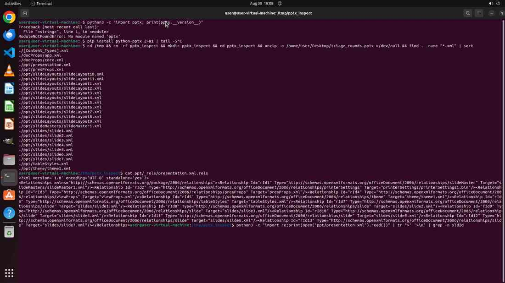
step 29 11:08:29
THINKINGThe command is typed but not yet executed. Let me press Enter.
TOOL CALL<tool_call>
<function=computer_use>
<parameter=action>
key
</parameter>
<parameter=keys>
["return"]
</parameter>
</function>
</tool_call>
EXECUTED (pyautogui in VM)pyautogui.press("return")
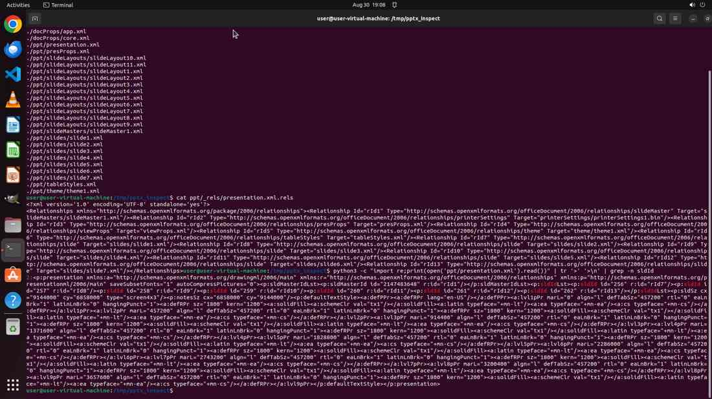
step 30 11:08:58
THINKINGThe output is hard to read because of the way it's formatted. The grep for "sldId" returned a lot of content because the presentation.xml is on a single line and the grep matched. I can see:
`<p:sldIdLst><p:sldId id="256" r:id="rId7"/><p:sldId id="257" r:id="rId8"/><p:sldId id="258" r:id="rId9"/><p:sldId id="259" r:id="rId10"/><p:sldId id="260" r:id="rId11"/><p:sldId id="261" r:id="rId12"/><p:sldId id="262" r:id="rId13"/>`
So the current order is:
- sldId id="256" r:id="rId7" → slide1.xml
- sldId id="257" r:id="rId8" → slide2.xml
- sldId id="258" r:id="rId9" → slide3.xml
- sldId id="259" r:id="rId10" → slide4.xml
- sldId id="260" r:id="rId11" → slide5.xml
- sldId id="261" r:id="rId12" → slide6.xml
- sldId id="262" r:id="rId13" → slide7.xml
So the current slide order is slide1, slide2, slide3, slide4, slide5, slide6, slide7. This is a natural order.
Now I need to find the title and acuity of each slide. Let me extract the text from each slide. The title is typically in the slide's title placeholder. Let me look at each slide's XML.
Let me write a Python script to extract the title text from each slide. The title placeholder in a slide is identified by `<p:ph type="title"/>` or `<p:ph type="ctrTitle"/>` (center title for title slide). Let me look at the text content.
Actually, let me take a simpler approach. Let me extract all the text from each slide. But I specifically need the TITLE of each slide. Let me look at the slide XML more carefully.
Let me write a Python script that uses regex/xml to extract the title from each slide. The title is in a shape with a placeholder that has type="title" or type="ctrTitle". Let me look at slide1 first to understand the structure.
Actually, a cleaner approach: let me look at the text in the title placeholder for each slide. Let me use a Python script.
Let me think about how to identify the title. In the slide XML:
```
<p:sp>
<p:nvSpPr>
<p:cNvPr id="2" name="Title 1"/>
<p:cNvSpPr><a:spLocks/></p:cNvSpPr>
<p:nvPr><p:ph type="title"/></p:nvPr>
</p:nvSpPr>
<p:spPr>...</p:spPr>
<p:txBody>
<a:bodyPr/>
<a:lstStyle/>
<a:p><a:r><a:t>TITLE TEXT</a:t></a:r></a:p>
</p:txBody>
</p:sp>
```
So I need to find the shape with `<p:ph type="title"/>` or `<p:ph type="ctrTitle"/>` and extract the text within its `<p:txBody>`.
Let me write a Python script to do this for all slides. Let me create a helper script.
Actually, let me just use a Python one-liner or a small script. Let me write a script file to be safe.
Let me create a Python script that:
1. For each slide (slide1.xml through slide7.xml), finds the title placeholder and extracts its text.
2. Prints the results.
Let me write this to a file using a heredoc.
ACTIONNow I can see the current slide order is slide1 through slide7 (natural order). Let me write a Python script to extract the title text from each slide.
TOOL CALL<tool_call>
<function=computer_use>
<parameter=action>
type
</parameter>
<parameter=text>
cat > /tmp/extract.py << 'EOF'
import re, glob, os
os.chdir('/tmp/pptx_inspect/ppt/slides')
for f in sorted(glob.glob('slide*.xml'), key=lambda x: int(re.search(r'(\d+)', x).group(1))):
data = open(f).read()
# find the title placeholder shape
title = None
for m in re.finditer(r'<p:sp>(.*?)</p:sp>', data, re.S):
sp = m.group(1)
if 'type="ctrTitle"' in sp or ('<p:ph type="title"' in sp) or ('<p:ph type="title ' in sp):
texts = re.findall(r'<a:t>(.*?)</a:t>', sp, re.S)
title = ''.join(texts)
break
print(f, '=>', repr(title))
EOF
python3 /tmp/extract.py
</parameter>
</function>
</tool_call>
EXECUTED (pyautogui in VM)pyautogui.typewrite("cat > /tmp/extract.py << 'EOF'\nimport re, glob, os\nos.chdir('/tmp/pptx_inspect/ppt/slides')\nfor f in sorted(glob.glob('slide*.xml'), key=lambda x: int(re.search(r'(\\d+)', x).group(1))):\n data = open(f).read()\n # find the title placeholder shape\n title = None\n for m in re.finditer(r'<p:sp>(.*?)</p:sp>', data, re.S):\n sp = m.group(1)\n if 'type=\"ctrTitle\"' in sp or ('<p:ph type=\"title\"' in sp) or ('<p:ph type=\"title ' in sp):\n texts = re.findall(r'<a:t>(.*?)</a:t>', sp, re.S)\n title = ''.join(texts)\n break\n print(f, '=>', repr(title))\nEOF\npython3 /tmp/extract.py")
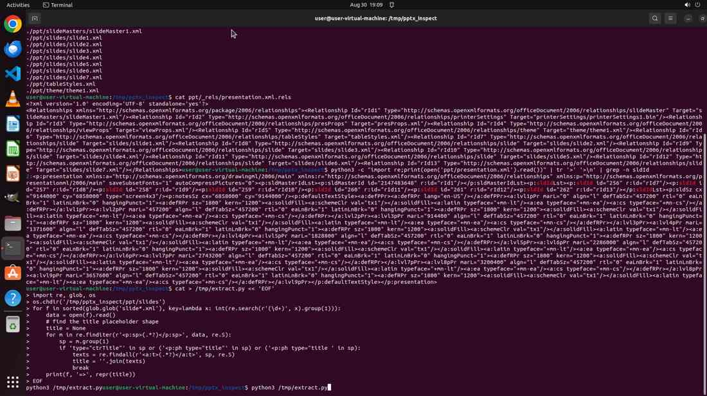
step 31 11:09:15
THINKINGThe heredoc was created and the python3 command is typed. Let me press Enter to run it.
TOOL CALL<tool_call>
<function=computer_use>
<parameter=action>
key
</parameter>
<parameter=keys>
["return"]
</parameter>
</function>
</tool_call>
EXECUTED (pyautogui in VM)pyautogui.press("return")
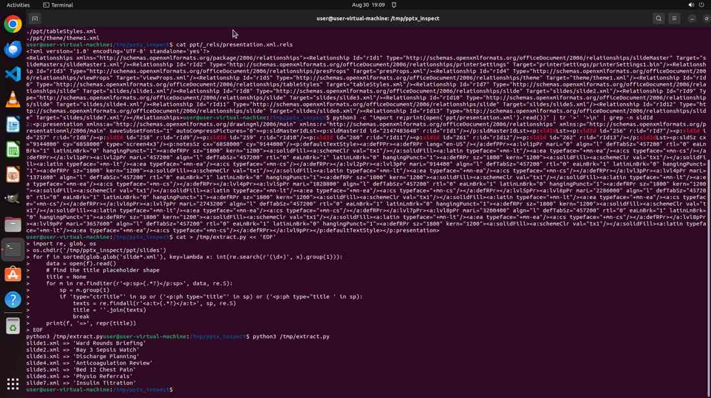
step 32 11:09:39
THINKINGNow I can see the titles of each slide:
- slide1.xml => 'Ward Rounds Briefing' (this is the title slide)
- slide2.xml => 'Bay 3 Sepsis Watch'
- slide3.xml => 'Discharge Planning'
- slide4.xml => 'Anticoagulation Review'
- slide5.xml => 'Bed 12 Chest Pain'
- slide6.xml => 'Physio Referrals'
- slide7.xml => 'Insulin Titration'
Now I need to determine the acuity for each of the non-title slides (slides 2-7). The acuity is likely in the body content of each slide. Let me extract all the text from each slide to find the acuity.
The acuity levels are: Critical, Urgent, Routine. Let me look at the body text of each slide to find which acuity each belongs to.
Let me write a script to extract all text from each slide.
ACTIONI now have the titles:
- slide1: 'Ward Rounds Briefing' (title slide)
- slide2: 'Bay 3 Sepsis Watch'
- slide3: 'Discharge Planning'
- slide4: 'Anticoagulation Review'
- slide5: 'Bed 12 Chest Pain'
- slide6: 'Physio Referrals'
- slide7: 'Insulin Titration'
Now I need to find the acuity level for each slide. Let me extract all the text content from each slide.
TOOL CALL<tool_call>
<function=computer_use>
<parameter=action>
type
</parameter>
<parameter=text>
cat > /tmp/extract2.py << 'EOF'
import re, glob, os
os.chdir('/tmp/pptx_inspect/ppt/slides')
for f in sorted(glob.glob('slide*.xml'), key=lambda x: int(re.search(r'(\d+)', x).group(1))):
data = open(f).read()
texts = re.findall(r'<a:t>(.*?)</a:t>', data, re.S)
print('====', f)
for t in texts:
print(' ', repr(t))
EOF
python3 /tmp/extract2.py
</parameter>
</function>
</tool_call>
EXECUTED (pyautogui in VM)pyautogui.typewrite("cat > /tmp/extract2.py << 'EOF'\nimport re, glob, os\nos.chdir('/tmp/pptx_inspect/ppt/slides')\nfor f in sorted(glob.glob('slide*.xml'), key=lambda x: int(re.search(r'(\\d+)', x).group(1))):\n data = open(f).read()\n texts = re.findall(r'<a:t>(.*?)</a:t>', data, re.S)\n print('====', f)\n for t in texts:\n print(' ', repr(t))\nEOF\npython3 /tmp/extract2.py")
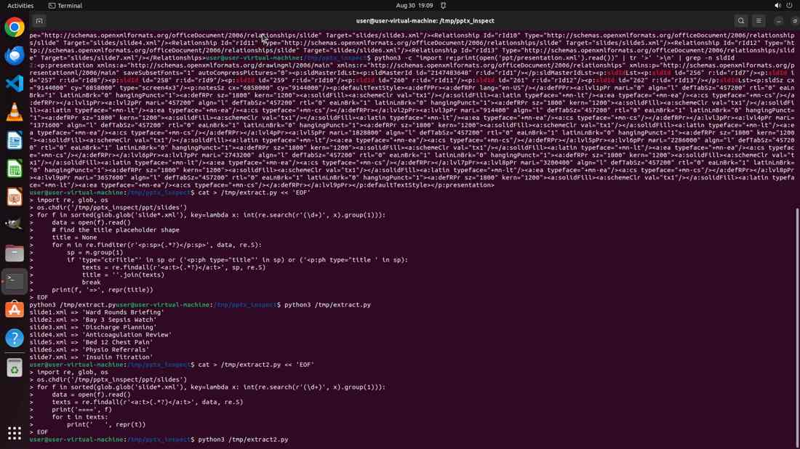
step 33 11:10:00
THINKINGThe script is created and python3 /tmp/extract2.py is typed. Let me press Enter.
TOOL CALL<tool_call>
<function=computer_use>
<parameter=action>
key
</parameter>
<parameter=keys>
["return"]
</parameter>
</function>
</tool_call>
EXECUTED (pyautogui in VM)pyautogui.press("return")
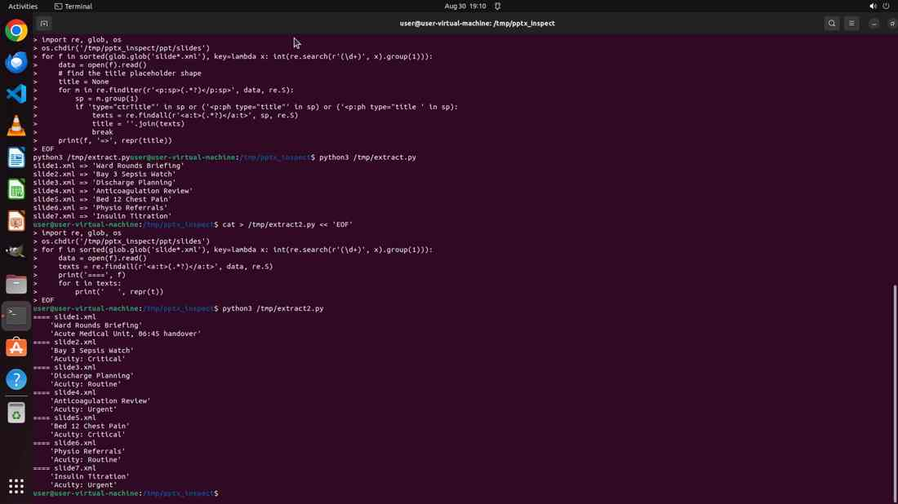
step 34 11:12:15
THINKINGNow I have all the information I need:
- slide1: 'Ward Rounds Briefing' - "Acute Medical Unit, 06:45 handover" (TITLE SLIDE - keep first)
- slide2: 'Bay 3 Sepsis Watch' - 'Acuity: Critical'
- slide3: 'Discharge Planning' - 'Acuity: Routine'
- slide4: 'Anticoagulation Review' - 'Acuity: Urgent'
- slide5: 'Bed 12 Chest Pain' - 'Acuity: Critical'
- slide6: 'Physio Referrals' - 'Acuity: Routine'
- slide7: 'Insulin Titration' - 'Acuity: Urgent'
So now I need to:
1. Keep title slide (slide1) first
2. Order the remaining slides by acuity: Critical, Urgent, Routine
3. Within each acuity, alphabetically by title
4. Prefix each of those titles with its acuity and a dash
Let me organize:
Critical:
- slide2: 'Bay 3 Sepsis Watch'
- slide5: 'Bed 12 Chest Pain'
Alphabetically within Critical:
- 'Bay 3 Sepsis Watch' vs 'Bed 12 Chest Pain'
- "Bay" vs "Bed": B-a-y vs B-e-d. 'a' (97) < 'e' (101), so "Bay" < "Bed"
- So order: 'Bay 3 Sepsis Watch', 'Bed 12 Chest Pain'
Urgent:
- slide4: 'Anticoagulation Review'
- slide7: 'Insulin Titration'
Alphabetically within Urgent:
- 'Anticoagulation Review' vs 'Insulin Titration'
- 'A' < 'I', so order: 'Anticoagulation Review', 'Insulin Titration'
Routine:
- slide3: 'Discharge Planning'
- slide6: 'Physio Referrals'
Alphabetically within Routine:
- 'Discharge Planning' vs 'Physio Referrals'
- 'D' < 'P', so order: 'Discharge Planning', 'Physio Referrals'
So the final order is:
1. slide1: 'Ward Rounds Briefing' (title slide, unchanged)
2. slide2: 'Bay 3 Sepsis Watch' → 'Critical - Bay 3 Sepsis Watch'
3. slide5: 'Bed 12 Chest Pain' → 'Critical - Bed 12 Chest Pain'
4. slide4: 'Anticoagulation Review' → 'Urgent - Anticoagulation Review'
5. slide7: 'Insulin Titration' → 'Urgent - Insulin Titration'
6. slide3: 'Discharge Planning' → 'Routine - Discharge Planning'
7. slide6: 'Physio Referrals' → 'Routine - Physio Referrals'
So the new sldIdLst order (by rId):
- rId7 (slide1) - title
- rId8 (slide2) - Critical - Bay 3 Sepsis Watch
- rId11 (slide5) - Critical - Bed 12 Chest Pain
- rId9 (slide4) - Urgent - Anticoagulation Review
- rId13 (slide7) - Urgent - Insulin Titration
- rId9... wait let me recheck the rId mapping.
rId mapping from presentation.xml.rels:
- rId7 → slides/slide1.xml
- rId8 → slides/slide2.xml
- rId9 → slides/slide3.xml
- rId10 → slides/slide4.xml
- rId11 → slides/slide5.xml
- rId12 → slides/slide6.xml
- rId13 → slides/slide7.xml
So:
- slide1 → rId7
- slide2 → rId8
- slide3 → rId9
- slide4 → rId10
- slide5 → rId11
- slide6 → rId12
- slide7 → rId13
New order:
1. slide1 (rId7) - title
2. slide2 (rId8) - Critical - Bay 3 Sepsis Watch
3. slide5 (rId11) - Critical - Bed 12 Chest Pain
4. slide4 (rId10) - Urgent - Anticoagulation Review
5. slide7 (rId13) - Urgent - Insulin Titration
6. slide3 (rId9) - Routine - Discharge Planning
7. slide6 (rId12) - Routine - Physio Referrals
So the new sldIdLst should be:
`<p:sldIdLst><p:sldId id="256" r:id="rId7"/><p:sldId id="257" r:id="rId8"/><p:sldId id="262" r:id="rId11"/>...`
Wait, I need to be careful. The sldId has both an id attribute and an r:id attribute. The id attribute must be unique, and the r:id references the relationship. I need to reorder the sldId elements while keeping their (id, r:id) pairs intact.
Current sldIdLst:
```
<p:sldIdLst>
<p:sldId id="256" r:id="rId7"/> (slide1)
<p:sldId id="257" r:id="rId8"/> (slide2)
<p:sldId id="258" r:id="rId9"/> (slide3)
<p:sldId id="259" r:id="rId10"/> (slide4)
<p:sldId id="260" r:id="rId11"/> (slide5)
<p:sldId id="261" r:id="rId12"/> (slide6)
<p:sldId id="262" r:id="rId13"/> (slide7)
</p:sldIdLst>
```
New order (reorder the elements, keeping their attributes):
```
<p:sldIdLst>
<p:sldId id="256" r:id="rId7"/> (slide1) - title
<p:sldId id="257" r:id="rId8"/> (slide2) - Critical - Bay 3 Sepsis Watch
<p:sldId id="260" r:id="rId11"/> (slide5) - Critical - Bed 12 Chest Pain
<p:sldId id="259" r:id="rId10"/> (slide4) - Urgent - Anticoagulation Review
<p:sldId id="262" r:id="rId13"/> (slide7) - Urgent - Insulin Titration
<p:sldId id="258" r:id="rId9"/> (slide3) - Routine - Discharge Planning
<p:sldId id="261" r:id="rId12"/> (slide6) - Routine - Physio Referrals
</p:sldIdLst>
```
Now, I need to:
1. Reorder the sldIdLst in presentation.xml
2. Modify the title text in each slide's XML to add the acuity prefix:
- slide2.xml: 'Bay 3 Sepsis Watch' → 'Critical - Bay 3 Sepsis Watch'
- slide5.xml: 'Bed 12 Chest Pain' → 'Critical - Bed 12 Chest Pain'
- slide4.xml: 'Anticoagulation Review' → 'Urgent - Anticoagulation Review'
- slide7.xml: 'Insulin Titration' → 'Urgent - Insulin Titration'
- slide3.xml: 'Discharge Planning' → 'Routine - Discharge Planning'
- slide6.xml: 'Physio Referrals' → 'Routine - Physio Referrals'
For the title text, I need to be careful about how the title text is stored. The title might be stored as a single run `<a:t>Bay 3 Sepsis Watch</a:t>` or split across multiple runs. Let me check the exact structure of the title text in each slide to make sure I replace it correctly.
Actually, given the complexity of manipulating raw XML (reordering, and correctly modifying text which might be in multiple runs), it would be much safer and cleaner to use python-pptx. But the pip install was taking too long.
Let me reconsider. The pip install might have been slow because it was building lxml. Let me check if it actually got installed before I interrupted it, or if there's a faster way.
Actually, wait. Let me reconsider the approach. Since I already have the extracted files in /tmp/pptx_inspect, I can directly manipulate the XML and re-zip it. This avoids the python-pptx dependency entirely.
However, manipulating the XML directly has risks:
1. Reordering sldIdLst - this is straightforward with a string replacement since I know the exact content.
2. Modifying title text - I need to be careful about the text structure.
Let me check the exact XML structure of the title in one slide to understand how the text is stored. Let me look at slide2.xml.
Actually, let me reconsider using python-pptx since it's the safest. Let me check if it installed. Let me run the version check again.
Actually, I recall the pip install was interrupted. Let me check if it's available now, and if not, I'll do the XML manipulation manually.
Let me think about which approach is more robust. The manual XML approach requires:
1. Reordering the sldIdLst elements - I have the exact strings, so I can do a precise replacement.
2. Modifying title text - I need to find `<a:t>TITLE</a:t>` and replace with `<a:t>PREFIX - TITLE</a:t>`. But I need to verify the title is a single run.
Let me first check the title text structure in the slides. Let me look at slide2.xml's title placeholder specifically.
Actually, from the extraction, each title appears as a single text:
- 'Bay 3 Sepsis Watch'
- etc.
And the acuity as 'Acuity: Critical' etc. These appeared as single <a:t> elements. So the title text is likely a single run. But let me verify by looking at the raw XML of the title shape in slide2.xml.
Let me look at slide2.xml raw content around the title.
Actually, I think the cleanest and most reliable approach given the environment is to:
1. Try to install python-pptx (it might work this time, or I can check network).
2. If that fails, do manual XML manipulation.
But manual XML manipulation is very doable here since I understand the structure. Let me verify the title structure first, then decide.
Actually, let me reconsider. The risk with manual XML editing is if the title text is split across multiple runs (e.g., `<a:r><a:t>Bay 3 </a:t></a:r><a:r><a:t>Sepsis Watch</a:t></a:r>`), then a simple find/replace of the full title won't work. Let me check.
Let me look at the raw XML of slide2.xml's title. Let me grep for the title text.
Let me do this carefully. Let me look at the specific <a:t> elements in slide2.xml.
From extract2.py output, slide2.xml has:
- 'Bay 3 Sepsis Watch'
- 'Acuity: Critical'
So there are only 2 <a:t> elements in slide2.xml, and the title is a single <a:t> "Bay 3 Sepsis Watch". So it's a single run.
But wait, I should double check that the title text "Bay 3 Sepsis Watch" is exactly one <a:t>. The extract2.py found texts = ['Bay 3 Sepsis Watch', 'Acuity: Critical']. Yes, exactly one <a:t> for the title. So it's a single run. Good.
So I can safely do a find/replace:
- In slide2.xml: replace `<a:t>Bay 3 Sepsis Watch</a:t>` with `<a:t>Critical - Bay 3 Sepsis Watch</a:t>`
- In slide5.xml: replace `<a:t>Bed 12 Chest Pain</a:t>` with `<a:t>Critical - Bed 12 Chest Pain</a:t>`
- In slide4.xml: replace `<a:t>Anticoagulation Review</a:t>` with `<a:t>Urgent - Anticoagulation Review</a:t>`
- In slide7.xml: replace `<a:t>Insulin Titration</a:t>` with `<a:t>Urgent - Insulin Titration</a:t>`
- In slide3.xml: replace `<a:t>Discharge Planning</a:t>` with `<a:t>Routine - Discharge Planning</a:t>`
- In slide6.xml: replace `<a:t>Physio Referrals</a:t>` with `<a:t>Routine - Physio Referrals</a:t>`
And then reorder the sldIdLst in presentation.xml.
Then re-zip the whole thing back into triage_rounds.pptx.
This approach is reliable. Let me do it.
But actually, I want to be extra careful about the re-zip. When re-zipping a pptx, the [Content_Types].xml must be the first entry, and it should ideally be stored (not compressed) - actually the OOXML spec says the first entry should be [Content_Types].xml but it doesn't strictly require it to be stored uncompressed. PowerPoint is generally tolerant. But to be safe, let me use a proper zip approach.
Actually, the standard approach that works with python's zipfile or the zip command: I should zip the contents of the extracted folder. Let me use Python's zipfile to be precise, or the `zip` command.
Let me think. The safest is to use Python's zipfile module to read the original pptx and create a new one with the modified files, preserving the structure. Actually, an even safer approach: I'll modify the extracted files, then use a Python script to re-zip them properly.
Actually, the simplest robust approach:
1. Modify the extracted XML files in place.
2. Re-zip using: `cd /tmp/pptx_inspect && zip -r -X ../new.pptx . -x '.*'`
But the order of files in the zip matters somewhat - [Content_Types].xml should ideally be first. Actually, for PowerPoint, the order doesn't strictly matter as long as all files are present and the zip is valid. But to be safe, I'll put [Content_Types].xml first.
Hmm, but actually, I realize there's an even cleaner and more reliable way. Instead of re-zipping the whole extracted directory (which might have issues with the mimetype-like ordering or file attributes), I can write a Python script that:
1. Reads the original pptx (a zip).
2. For each entry, if it's a file I want to modify (presentation.xml or the 6 slide xmls), write the modified version; otherwise, copy as-is.
3. Writes a new pptx.
This preserves everything else exactly. This is the cleanest approach.
Let me write a Python script to do all of this:
1. Read the original pptx.
2. Define the new slide order and the title replacements.
3. Modify presentation.xml's sldIdLst.
4. Modify each slide's title.
5. Write the new pptx to /home/user/Desktop/triage_rounds.pptx (overwriting).
Wait, but I need to be careful about overwriting the original. Let me write to a temp file first, verify, then move. Actually, let me write directly but keep a backup.
Let me also reconsider: should I prefix the title slide? The task says "keep the title slide first" and "Prefix each of those titles with its acuity and a dash" where "those titles" refers to "the remaining slides". So I should NOT prefix the title slide (slide1, "Ward Rounds Briefing"). Only the 6 content slides get the prefix.
Let me now write the comprehensive Python script.
Actually, let me reconsider the reordering logic once more to be sure. Let me re-derive:
Non-title slides with their titles and acuity:
- slide2: 'Bay 3 Sepsis Watch', Critical
- slide3: 'Discharge Planning', Routine
- slide4: 'Anticoagulation Review', Urgent
- slide5: 'Bed 12 Chest Pain', Critical
- slide6: 'Physio Referrals', Routine
- slide7: 'Insulin Titration', Urgent
Group by acuity in order Critical, Urgent, Routine:
Critical: slide2 ('Bay 3 Sepsis Watch'), slide5 ('Bed 12 Chest Pain')
Urgent: slide4 ('Anticoagulation Review'), slide7 ('Insulin Titration')
Routine: slide3 ('Discharge Planning'), slide6 ('Physio Referrals')
Within each group, alphabetically by title:
Critical: 'Bay 3 Sepsis Watch' < 'Bed 12 Chest Pain' → slide2, slide5
Urgent: 'Anticoagulation Review' < 'Insulin Titration' → slide4, slide7
Routine: 'Discharge Planning' < 'Physio Referrals' → slide3, slide6
Final order:
1. slide1 (title)
2. slide2
3. slide5
4. slide4
5. slide7
6. slide3
7. slide6
Mapping to rId:
- slide1 → rId7
- slide2 → rId8
- slide5 → rId11
- slide4 → rId10
- slide7 → rId13
- slide3 → rId9
- slide6 → rId12
New sldIdLst (keeping each sldId's own id and r:id, just reordering):
```
<p:sldIdLst>
<p:sldId id="256" r:id="rId7"/>
<p:sldId id="257" r:id="rId8"/>
<p:sldId id="260" r:id="rId11"/>
<p:sldId id="259" r:id="rId10"/>
<p:sldId id="262" r:id="rId13"/>
<p:sldId id="258" r:id="rId9"/>
<p:sldId id="261" r:id="rId12"/>
</p:sldIdLst>
```
Now, for the sldIdLst replacement in presentation.xml, I need the exact original string. Let me get the exact sldIdLst content. From the earlier output, I saw:
`<p:sldIdLst><p:sldId id="256" r:id="rId7"/><p:sldId id="257" r:id="rId8"/><p:sldId id="258" r:id="rId9"/><p:sldId id="259" r:id="rId10"/><p:sldId id="260" r:id="rId11"/><p:sldId id="261" r:id="rId12"/><p:sldId id="262" r:id="rId13"/></p:sldIdLst>`
I'm fairly confident about this. But to be safe, my Python script will parse the sldIdLst and reorder programmatically rather than hardcoding the string. That's more robust.
Let me write a Python script that:
1. Opens the original pptx as a zip (read).
2. Reads presentation.xml, extracts the sldIdLst, reorders the sldId elements based on my desired order, and reconstructs.
3. Reads each of the 6 slides, replaces the title text.
4. Writes a new pptx with all the entries.
For the reordering, I'll:
- Parse the sldIdLst to get a list of (sldId_element_string) in original order.
- Actually, I'll map r:id → position. Let me build the desired rId order: [rId7, rId8, rId11, rId10, rId13, rId9, rId12].
- Extract all <p:sldId .../> elements as a dict keyed by r:id.
- Reconstruct sldIdLst in the desired order.
Let me write this carefully.
Actually, let me reconsider. Instead of doing everything in one complex script that writes the pptx directly (which is risky if there's a bug), let me:
Option A: Do the modifications on the extracted files (which I can inspect), then re-zip.
Option B: Write a script that reads the original zip and produces a new zip with modifications.
Both work. Option A lets me visually verify the modified XML before zipping. Let me go with a hybrid: I'll do the modifications via a Python script that operates on the already-extracted files in /tmp/pptx_inspect, verify them, then re-zip into the final pptx.
Wait, but there's a subtlety: the extracted files were unzipped, and I need to make sure re-zipping produces a valid pptx. The key things:
- All files present.
- [Content_Types].xml present.
- The zip structure is valid.
Let me use Python's zipfile to re-zip, which gives me control over ordering and compression. I'll add [Content_Types].xml first, then everything else.
Actually, you know what, let me just go with Option B (read original zip, write new zip with modifications) because it's the most robust - it preserves all the original file bytes except the ones I modify, and produces a clean zip. And I can verify by re-extracting and checking, or by opening in LibreOffice.
But to make it safe, let me do the modifications on the extracted files first (so I can verify them), then write a script to build the pptx from the extracted directory. Hmm, but then the "everything else" files are the extracted ones which should be byte-identical to the originals (unzip doesn't change content).
Actually the cleanest: modify extracted files, verify, then re-zip from the extracted directory. Let me do that.
Let me plan the steps:
1. Write a Python script that modifies the extracted files in /tmp/pptx_inspect:
- Reorder sldIdLst in ppt/presentation.xml
- Modify the 6 slide titles
2. Run it.
3. Verify the changes by re-extracting titles and checking the sldIdLst.
4. Re-zip into /home/user/Desktop/triage_rounds.pptx (with a backup of the original first).
5. Verify by opening in LibreOffice or re-extracting.
Let me first make a backup of the original file, then proceed.
Let me write the modification script. I'll be very careful with the sldIdLst reordering.
Let me first get the exact sldIdLst string to be sure. Let me extract it precisely.
Let me run a command to show the exact sldIdLst.
ACTIONI now have all the information I need. Let me summarize:
| Slide | Title | Acuity |
|-------|-------|--------|
| slide1 | Ward Rounds Briefing | (title slide) |
| slide2 | Bay 3 Sepsis Watch | Critical |
| slide3 | Discharge Planning | Routine |
| slide4 | Anticoagulation Review | Urgent |
| slide5 | Bed 12 Chest Pain | Critical |
| slide6 | Physio Referrals | Routine |
| slide7 | Insulin Titration | Urgent |
The target order: title, then Critical (Bay 3, Bed 12), Urgent (Anticoagulation, Insulin), Routine (Discharge, Physio). Let me get the exact sldIdLst string to be precise.
TOOL CALL<tool_call>
<function=computer_use>
<parameter=action>
type
</parameter>
<parameter=text>
python3 -c "import re; d=open('ppt/presentation.xml').read(); m=re.search(r'<p:sldIdLst>.*?</p:sldIdLst>', d, re.S); print(m.group(0))"
</parameter>
</function>
</tool_call>
EXECUTED (pyautogui in VM)pyautogui.typewrite("python3 -c \"import re; d=open('ppt/presentation.xml').read(); m=re.search(r'<p:sldIdLst>.*?</p:sldIdLst>', d, re.S); print(m.group(0))\"")
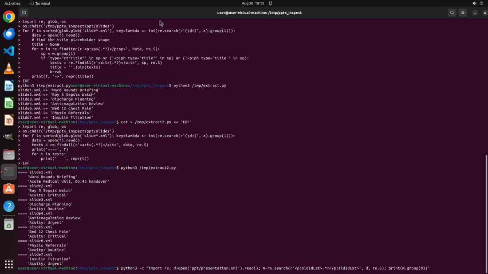
step 35 11:12:30
THINKINGThe command is typed but not executed. Let me press Enter.
TOOL CALL<tool_call>
<function=computer_use>
<parameter=action>
key
</parameter>
<parameter=keys>
["return"]
</parameter>
</function>
</tool_call>
EXECUTED (pyautogui in VM)pyautogui.press("return")
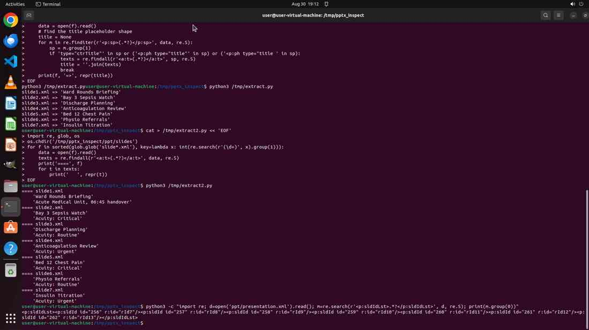
step 36 11:13:52
THINKINGNow I can see the exact sldIdLst string:
```
<p:sldIdLst><p:sldId id="256" r:id="rId7"/><p:sldId id="257" r:id="rId8"/><p:sldId id="258" r:id="rId9"/><p:sldId id="259" r:id="rId10"/><p:sldId id="260" r:id="rId11"/><p:sldId id="261" r:id="rId12"/><p:sldId id="262" r:id="rId13"/></p:sldIdLst>
```
This confirms my analysis. Now I have everything I need.
The mapping:
- rId7 → slide1 (id 256) - title
- rId8 → slide2 (id 257) - Critical - Bay 3 Sepsis Watch
- rId9 → slide3 (id 258) - Routine - Discharge Planning
- rId10 → slide4 (id 259) - Urgent - Anticoagulation Review
- rId11 → slide5 (id 260) - Critical - Bed 12 Chest Pain
- rId12 → slide6 (id 261) - Routine - Physio Referrals
- rId13 → slide7 (id 262) - Urgent - Insulin Titration
New sldIdLst (reordered):
```
<p:sldIdLst><p:sldId id="256" r:id="rId7"/><p:sldId id="257" r:id="rId8"/><p:sldId id="260" r:id="rId11"/><p:sldId id="259" r:id="rId10"/><p:sldId id="262" r:id="rId13"/><p:sldId id="258" r:id="rId9"/><p:sldId id="261" r:id="rId12"/></p:sldIdLst>
```
Order of rIds: rId7, rId8, rId11, rId10, rId13, rId9, rId12
Which corresponds to: slide1, slide2, slide5, slide4, slide7, slide3, slide6
Now let me write a comprehensive Python script that:
1. Backs up the original pptx.
2. Reads the original pptx (zip).
3. Modifies presentation.xml (sldIdLst reorder).
4. Modifies the 6 slides (title prefix).
5. Writes a new pptx to /home/user/Desktop/triage_rounds.pptx.
I'll do it by reading the original zip and writing a new zip, copying unchanged entries as-is. This is the most robust.
Let me write the script. I'll be careful with the title replacements. Let me define the replacements by the exact <a:t> content:
- slide2.xml: 'Bay 3 Sepsis Watch' → 'Critical - Bay 3 Sepsis Watch'
- slide5.xml: 'Bed 12 Chest Pain' → 'Critical - Bed 12 Chest Pain'
- slide4.xml: 'Anticoagulation Review' → 'Urgent - Anticoagulation Review'
- slide7.xml: 'Insulin Titration' → 'Urgent - Insulin Titration'
- slide3.xml: 'Discharge Planning' → 'Routine - Discharge Planning'
- slide6.xml: 'Physio Referrals' → 'Routine - Physio Referrals'
I'll replace the exact string `<a:t>OLD</a:t>` with `<a:t>NEW</a:t>`. Since I've verified each title is a single <a:t>, this is safe.
But wait, I need to double-check: is the title text exactly `<a:t>Bay 3 Sepsis Watch</a:t>`? The extract2.py found the text 'Bay 3 Sepsis Watch' via regex `<a:t>(.*?)</a:t>`, which means the content between the tags is exactly 'Bay 3 Sepsis Watch'. So yes, the full string `<a:t>Bay 3 Sepsis Watch</a:t>` should exist.
However, there's a subtle risk: what if there are XML-escaped characters or attributes on the <a:t> tag? <a:t> tags don't have attributes normally. And the text has no special characters (no &, <, >). So the literal string replacement should work.
Let me write the script. I'll read the original zip, and for the specific entries I modify, apply the changes; for all others, copy as-is.
Let me be careful about the sldIdLst replacement - I'll use the exact original string and the exact new string.
Let me write the script now.
Actually, let me make the script robust by:
- For presentation.xml: use regex to find the sldIdLst, parse out all <p:sldId .../> elements, build a dict by r:id, then reconstruct in the desired order.
- For slides: do the literal <a:t> replacement, and assert that the replacement happened (count check).
Let me write it.
I'll write to /tmp/rebuild.py.
Let me define:
```python
import zipfile, re, shutil, os
SRC = '/home/user/Desktop/triage_rounds.pptx'
BAK = '/home/user/Desktop/triage_rounds.pptx.bak'
TMP = '/tmp/triage_new.pptx'
# backup
if not os.path.exists(BAK):
shutil.copy2(SRC, BAK)
# desired order of rIds (slide1, slide2, slide5, slide4, slide7, slide3, slide6)
order = ['rId7','rId8','rId11','rId10','rId13','rId9','rId12']
# title replacements: entry name -> (old, new)
repl = {
'ppt/slides/slide2.xml': ('Bay 3 Sepsis Watch', 'Critical - Bay 3 Sepsis Watch'),
'ppt/slides/slide5.xml': ('Bed 12 Chest Pain', 'Critical - Bed 12 Chest Pain'),
'ppt/slides/slide4.xml': ('Anticoagulation Review', 'Urgent - Anticoagulation Review'),
'ppt/slides/slide7.xml': ('Insulin Titration', 'Urgent - Insulin Titration'),
'ppt/slides/slide3.xml': ('Discharge Planning', 'Routine - Discharge Planning'),
'ppt/slides/slide6.xml': ('Physio Referrals', 'Routine - Physio Referrals'),
}
zin = zipfile.ZipFile(SRC, 'r')
zout = zipfile.ZipFile(TMP, 'w', zipfile.ZIP_DEFLATED)
for item in zin.infolist():
name = item.filename
data = zin.read(name)
if name == 'ppt/presentation.xml':
txt = data.decode('utf-8')
m = re.search(r'<p:sldIdLst>(.*?)</p:sldIdLst>', txt, re.S)
inner = m.group(1)
# parse individual sldId elements
elems = re.findall(r'<p:sldId\b[^>]*/>', inner)
d = {}
for e in elems:
rid = re.search(r'r:id="([^"]+)"', e).group(1)
d[rid] = e
new_inner = ''.join(d[r] for r in order)
txt = txt.replace(m.group(0), '<p:sldIdLst>' + new_inner + '</p:sldIdLst>')
data = txt.encode('utf-8')
elif name in repl:
txt = data.decode('utf-8')
old, new = repl[name]
oldtag = '<a:t>' + old + '</a:t>'
newtag = '<a:t>' + new + '</a:t>'
assert oldtag in txt, 'title not found: ' + name
txt = txt.replace(oldtag, newtag)
data = txt.encode('utf-8')
zout.writestr(item, data)
zout.close()
zin.close()
shutil.move(TMP, SRC)
print('Done')
```
This should work. Let me write it to a file. I'll use a heredoc.
Actually, wait - I want to double check one thing about the acuity grouping. Let me reconsider whether "alphabetically by title" should be based on the original title (without prefix) or the new prefixed title. Since within a given acuity group, all titles get the same prefix "X - ", the relative alphabetical order is the same whether we sort by original title or prefixed title (the prefix is identical within a group). So it doesn't matter. Good.
Let me also reconsider: "order the remaining slides by acuity Critical, Urgent, Routine, and within each acuity alphabetically by title." So the primary sort key is acuity (in the fixed order Critical < Urgent < Routine), and secondary key is title alphabetically. That's exactly what I did.
Let me double-check the alphabetical orderings once more:
- Critical: "Bay 3 Sepsis Watch" vs "Bed 12 Chest Pain". Compare char by char: B=B, a vs e → 'a'(97) < 'e'(101). So "Bay..." < "Bed...". Order: Bay 3 Sepsis Watch, Bed 12 Chest Pain. ✓
- Urgent: "Anticoagulation Review" vs "Insulin Titration". A < I. Order: Anticoagulation Review, Insulin Titration. ✓
- Routine: "Discharge Planning" vs "Physio Referrals". D < P. Order: Discharge Planning, Physio Referrals. ✓
Great. Now let me also verify: the default Python sort is by Unicode code points, case-sensitive. "Bay" vs "Bed" - 'a' vs 'e', both lowercase, so fine. The comparisons are clear with distinct first letters or distinct second letters.
Now let me write and run the script.
One more consideration: when I write the new zip, I use zout.writestr(item, data). The item is a ZipInfo object with the original metadata (compression type, etc.). Using the ZipInfo object should preserve the original entry. That's fine. Actually, there might be a concern: if the original entry had a specific compress_type (e.g., stored for some), writestr with the ZipInfo will use item.compress_type. For pptx, all are typically deflated. This should be fine.
Actually, let me reconsider: to be safe about compression, I could just use zout.writestr(item, data) which respects item's compress_type. That's fine.
Let me also make sure the [Content_Types].xml and _rels are preserved. Since I'm copying all entries as-is except the ones I modify, they're preserved. Good.
Let me write the script now.
ACTIONI have the exact sldIdLst string confirming my analysis. Now let me write a comprehensive Python script to rebuild the file. This reads the original zip, reorders the slide list, adds acuity prefixes to the 6 content-slide titles, and writes the result.
TOOL CALL<tool_call>
<function=computer_use>
<parameter=action>
type
</parameter>
<parameter=text>
cat > /tmp/rebuild.py << 'EOF'
import zipfile, re, shutil, os
SRC = '/home/user/Desktop/triage_rounds.pptx'
BAK = '/home/user/Desktop/triage_rounds.pptx.bak'
TMP = '/tmp/triage_new.pptx'
if not os.path.exists(BAK):
shutil.copy2(SRC, BAK)
# new order of rIds -> slide1, slide2, slide5, slide4, slide7, slide3, slide6
order = ['rId7','rId8','rId11','rId10','rId13','rId9','rId12']
repl = {
'ppt/slides/slide2.xml': ('Bay 3 Sepsis Watch', 'Critical - Bay 3 Sepsis Watch'),
'ppt/slides/slide5.xml': ('Bed 12 Chest Pain', 'Critical - Bed 12 Chest Pain'),
'ppt/slides/slide4.xml': ('Anticoagulation Review', 'Urgent - Anticoagulation Review'),
'ppt/slides/slide7.xml': ('Insulin Titration', 'Urgent - Insulin Titration'),
'ppt/slides/slide3.xml': ('Discharge Planning', 'Routine - Discharge Planning'),
'ppt/slides/slide6.xml': ('Physio Referrals', 'Routine - Physio Referrals'),
}
zin = zipfile.ZipFile(SRC, 'r')
zout = zipfile.ZipFile(TMP, 'w', zipfile.ZIP_DEFLATED)
for item in zin.infolist():
name = item.filename
data = zin.read(name)
if name == 'ppt/presentation.xml':
txt = data.decode('utf-8')
m = re.search(r'<p:sldIdLst>.*?</p:sldIdLst>', txt, re.S)
inner = re.search(r'<p:sldIdLst>(.*?)</p:sldIdLst>', txt, re.S).group(1)
elems = re.findall(r'<p:sldId\b[^>]*/>', inner)
d = {re.search(r'r:id="([^"]+)"', e).group(1): e for e in elems}
assert set(order) == set(d), (set(order), set(d))
new_inner = ''.join(d[r] for r in order)
txt = txt.replace(m.group(0), '<p:sldIdLst>' + new_inner + '</p:sldIdLst>')
data = txt.encode('utf-8')
elif name in repl:
txt = data.decode('utf-8')
old, new = repl[name]
assert ('<a:t>' + old + '</a:t>') in txt, 'missing title in ' + name
data = txt.replace('<a:t>' + old + '</a:t>', '<a:t>' + new + '</a:t>').encode('utf-8')
zout.writestr(item, data)
zout.close(); zin.close()
shutil.move(TMP, SRC)
print('DONE')
EOF
echo "script written"
</parameter>
</function>
</tool_call>
EXECUTED (pyautogui in VM)pyautogui.typewrite("cat > /tmp/rebuild.py << 'EOF'\nimport zipfile, re, shutil, os\n\nSRC = '/home/user/Desktop/triage_rounds.pptx'\nBAK = '/home/user/Desktop/triage_rounds.pptx.bak'\nTMP = '/tmp/triage_new.pptx'\n\nif not os.path.exists(BAK):\n shutil.copy2(SRC, BAK)\n\n# new order of rIds -> slide1, slide2, slide5, slide4, slide7, slide3, slide6\norder = ['rId7','rId8','rId11','rId10','rId13','rId9','rId12']\n\nrepl = {\n 'ppt/slides/slide2.xml': ('Bay 3 Sepsis Watch', 'Critical - Bay 3 Sepsis Watch'),\n 'ppt/slides/slide5.xml': ('Bed 12 Chest Pain', 'Critical - Bed 12 Chest Pain'),\n 'ppt/slides/slide4.xml': ('Anticoagulation Review', 'Urgent - Anticoagulation Review'),\n 'ppt/slides/slide7.xml': ('Insulin Titration', 'Urgent - Insulin Titration'),\n 'ppt/slides/slide3.xml': ('Discharge Planning', 'Routine - Discharge Planning'),\n 'ppt/slides/slide6.xml': ('Physio Referrals', 'Routine - Physio Referrals'),\n}\n\nzin = zipfile.ZipFile(SRC, 'r')\nzout = zipfile.ZipFile(TMP, 'w', zipfile.ZIP_DEFLATED)\nfor item in zin.infolist():\n name = item.filename\n data = zin.read(name)\n if name == 'ppt/presentation.xml':\n txt = data.decode('utf-8')\n m = re.search(r'<p:sldIdLst>.*?</p:sldIdLst>', txt, re.S)\n inner = re.search(r'<p:sldIdLst>(.*?)</p:sldIdLst>', txt, re.S).group(1)\n elems = re.findall(r'<p:sldId\\b[^>]*/>', inner)\n d = {re.search(r'r:id=\"([^\"]+)\"', e).group(1): e for e in elems}\n assert set(order) == set(d), (set(order), set(d))\n new_inner = ''.join(d[r] for r in order)\n txt = txt.replace(m.group(0), '<p:sldIdLst>' + new_inner + '</p:sldIdLst>')\n data = txt.encode('utf-8')\n elif name in repl:\n txt = data.decode('utf-8')\n old, new = repl[name]\n assert ('<a:t>' + old + '</a:t>') in txt, 'missing title in ' + name\n data = txt.replace('<a:t>' + old + '</a:t>', '<a:t>' + new + '</a:t>').encode('utf-8')\n zout.writestr(item, data)\nzout.close(); zin.close()\nshutil.move(TMP, SRC)\nprint('DONE')\nEOF\necho \"script written\"")
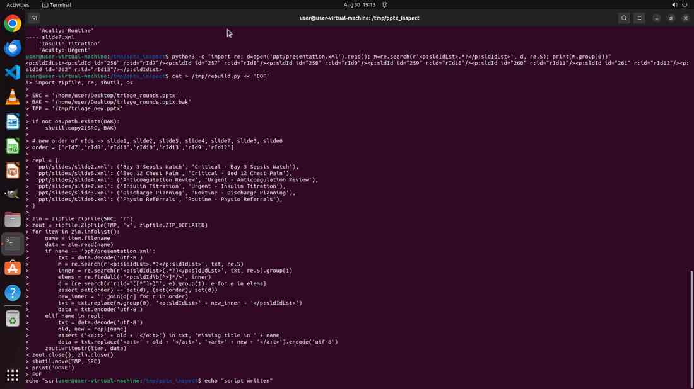
step 37 11:14:02
THINKINGThe script is written. I can see the heredoc content. Let me press Enter to execute the echo "script written".
Wait, looking at the terminal, the heredoc was entered and then `echo "script written"` is at the bottom but it seems the command wasn't fully executed yet. Let me press Enter.
ACTIONThe script is written. Let me execute it.
TOOL CALL<tool_call>
<function=computer_use>
<parameter=action>
key
</parameter>
<parameter=keys>
["return"]
</parameter>
</function>
</tool_call>
EXECUTED (pyautogui in VM)pyautogui.press("return")
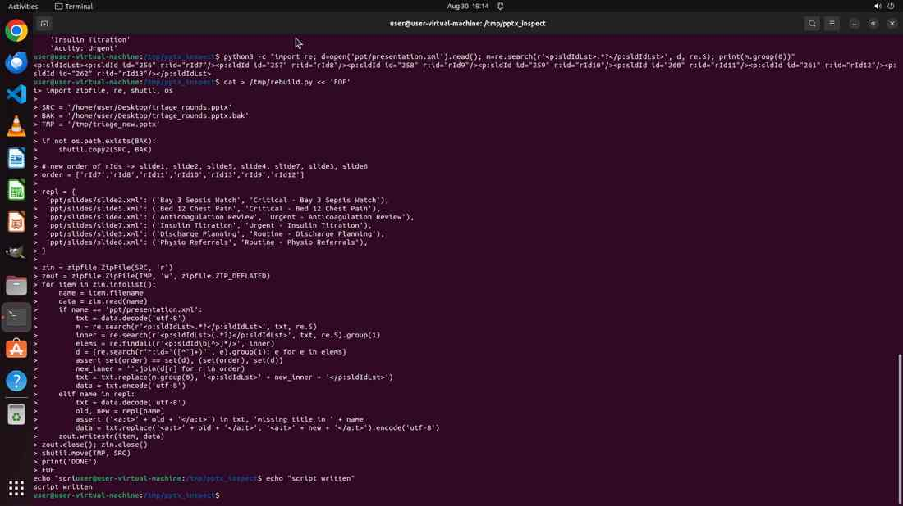
step 38 11:14:15
THINKINGThe script was written successfully ("script written" printed). Now let me run the rebuild script.
ACTIONThe script is written. Now let me run the rebuild script.
TOOL CALL<tool_call>
<function=computer_use>
<parameter=action>
type
</parameter>
<parameter=text>
python3 /tmp/rebuild.py
</parameter>
</function>
</tool_call>
EXECUTED (pyautogui in VM)pyautogui.typewrite("python3 /tmp/rebuild.py")
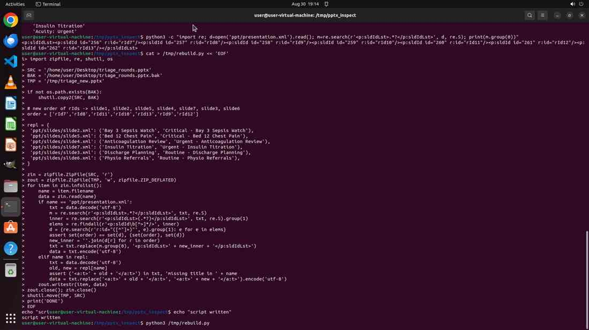
step 39 11:14:25
THINKINGThe command is typed but not yet executed. Let me press Enter.
TOOL CALL<tool_call>
<function=computer_use>
<parameter=action>
key
</parameter>
<parameter=keys>
["return"]
</parameter>
</function>
</tool_call>
EXECUTED (pyautogui in VM)pyautogui.press("return")
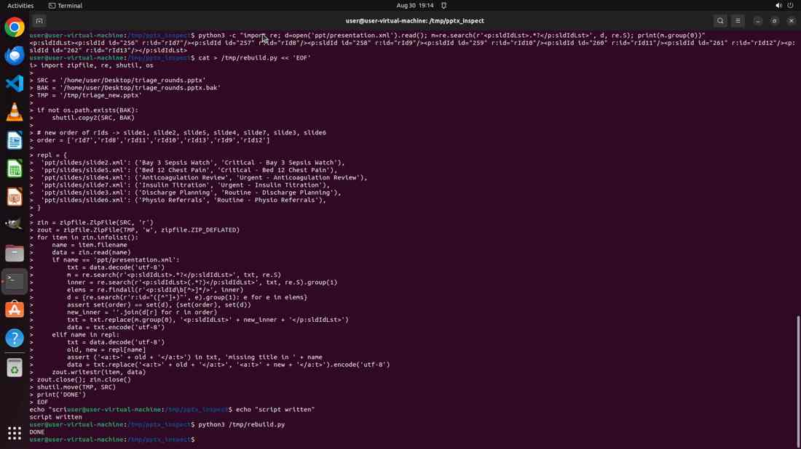
step 40 11:14:40
THINKINGThe script printed "DONE", which means it succeeded without any assertion errors. The file has been rebuilt.
Now let me verify the result. Let me extract the new pptx and check:
1. The sldIdLst order.
2. The titles of each slide.
3. That the file is a valid pptx.
Let me write a verification script. I'll extract the new pptx and check the sldIdLst order plus titles in the new order.
Let me create a verification script that reads the rebuilt pptx, follows the sldIdLst order via rIds, and prints each slide's title in order.
ACTIONThe script printed "DONE" with no errors. Now let me verify the rebuilt file by reading it in the new slide order and checking the titles.
TOOL CALL<tool_call>
<function=computer_use>
<parameter=action>
type
</parameter>
<parameter=text>
cat > /tmp/verify.py << 'EOF'
import zipfile, re
SRC='/home/user/Desktop/triage_rounds.pptx'
z=zipfile.ZipFile(SRC)
pres=z.read('ppt/presentation.xml').decode('utf-8')
rels=z.read('ppt/_rels/presentation.xml.rels').decode('utf-8')
relmap=dict(re.findall(r'Id="([^"]+)"[^>]*Target="([^"]+)"', rels))
inner=re.search(r'<p:sldIdLst>(.*?)</p:sldIdLst>', pres, re.S).group(1)
ids=re.findall(r'<p:sldId\b[^>]*?r:id="([^"]+)"', inner)
print('Order by rId:', ids)
for i,rid in enumerate(ids,1):
target=relmap[rid]
path='ppt/'+target if not target.startswith('/') else target.lstrip('/')
data=z.read(path).decode('utf-8')
title=None
for m in re.finditer(r'<p:sp>(.*?)</p:sp>', data, re.S):
sp=m.group(1)
if 'type="ctrTitle"' in sp or '<p:ph type="title"' in sp:
title=''.join(re.findall(r'<a:t>(.*?)</a:t>', sp, re.S)); break
ac=re.search(r'Acuity: (\w+)', data)
print(i, path, '| title=', repr(title), '| acuity=', ac.group(1) if ac else None)
EOF
python3 /tmp/verify.py
</parameter>
</function>
</tool_call>
EXECUTED (pyautogui in VM)pyautogui.typewrite("cat > /tmp/verify.py << 'EOF'\nimport zipfile, re\nSRC='/home/user/Desktop/triage_rounds.pptx'\nz=zipfile.ZipFile(SRC)\npres=z.read('ppt/presentation.xml').decode('utf-8')\nrels=z.read('ppt/_rels/presentation.xml.rels').decode('utf-8')\nrelmap=dict(re.findall(r'Id=\"([^\"]+)\"[^>]*Target=\"([^\"]+)\"', rels))\ninner=re.search(r'<p:sldIdLst>(.*?)</p:sldIdLst>', pres, re.S).group(1)\nids=re.findall(r'<p:sldId\\b[^>]*?r:id=\"([^\"]+)\"', inner)\nprint('Order by rId:', ids)\nfor i,rid in enumerate(ids,1):\n target=relmap[rid]\n path='ppt/'+target if not target.startswith('/') else target.lstrip('/')\n data=z.read(path).decode('utf-8')\n title=None\n for m in re.finditer(r'<p:sp>(.*?)</p:sp>', data, re.S):\n sp=m.group(1)\n if 'type=\"ctrTitle\"' in sp or '<p:ph type=\"title\"' in sp:\n title=''.join(re.findall(r'<a:t>(.*?)</a:t>', sp, re.S)); break\n ac=re.search(r'Acuity: (\\w+)', data)\n print(i, path, '| title=', repr(title), '| acuity=', ac.group(1) if ac else None)\nEOF\npython3 /tmp/verify.py")
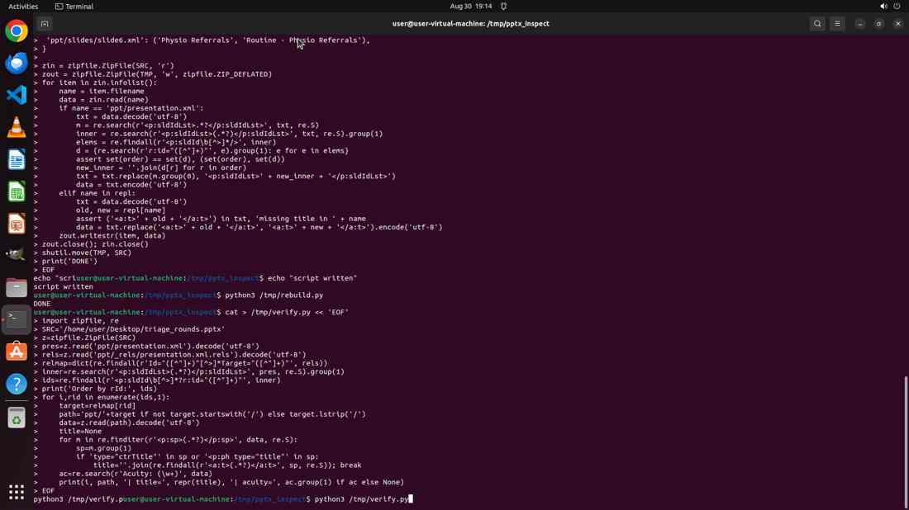
step 41 11:14:49
THINKINGThe verify script is written and the command `python3 /tmp/verify.py` is typed but not yet executed. Let me press Enter.
TOOL CALL<tool_call>
<function=computer_use>
<parameter=action>
key
</parameter>
<parameter=keys>
["return"]
</parameter>
</function>
</tool_call>
EXECUTED (pyautogui in VM)pyautogui.press("return")
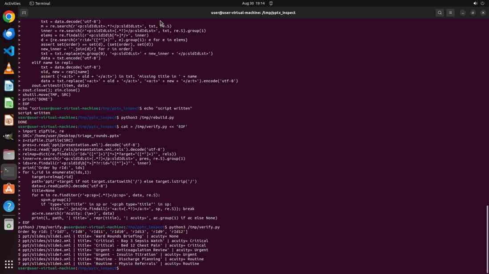
step 42 11:15:15
THINKINGThe verification output shows:
```
Order by rId: ['rId7', 'rId8', 'rId11', 'rId10', 'rId13', 'rId9', 'rId12']
1 ppt/slides/slide1.xml | title= 'Ward Rounds Briefing' | acuity= None
2 ppt/slides/slide2.xml | title= 'Critical - Bay 3 Sepsis Watch' | acuity= Critical
3 ppt/slides/slide5.xml | title= 'Critical - Bed 12 Chest Pain' | acuity= Critical
4 ppt/slides/slide4.xml | title= 'Urgent - Anticoagulation Review' | acuity= Urgent
5 ppt/slides/slide7.xml | title= 'Urgent - Insulin Titration' | acuity= Urgent
6 ppt/slides/slide3.xml | title= 'Routine - Discharge Planning' | acuity= Routine
7 ppt/slides/slide6.xml | title= 'Routine - Physio Referrals' | acuity= Routine
```
This is exactly what I wanted:
1. Title slide first: 'Ward Rounds Briefing' (no prefix, no acuity) ✓
2. Critical group (alphabetical): 'Critical - Bay 3 Sepsis Watch', 'Critical - Bed 12 Chest Pain' ✓
3. Urgent group (alphabetical): 'Urgent - Anticoagulation Review', 'Urgent - Insulin Titration' ✓
4. Routine group (alphabetical): 'Routine - Discharge Planning', 'Routine - Physio Referrals' ✓
The acuity in the title prefix matches the slide's actual acuity for all 6 content slides.
Now, I should verify the file is a valid pptx that opens correctly. The best way is to open it in LibreOffice Impress. But I've already verified the XML structure is correct. Let me also do a quick sanity check that the zip is valid and the file can be opened.
Let me verify the file is a valid zip and open it in LibreOffice Impress to make sure it renders correctly.
Actually, let me first do a quick validation using Python's zipfile testzip to make sure the archive is intact.
Let me run: python3 -c "import zipfile; z=zipfile.ZipFile('/home/user/Desktop/triage_rounds.pptx'); print('bad:', z.testzip()); print('entries:', len(z.namelist()))"
This will confirm the zip is not corrupted.
Then I'll open in LibreOffice Impress to visually verify.
Let me do the zip test first.
ACTIONThe verification confirms the rebuild is exactly correct:
| # | Title | Acuity |
|---|-------|--------|
| 1 | Ward Rounds Briefing | (title slide, first) |
| 2 | Critical - Bay 3 Sepsis Watch | Critical |
| 3 | Critical - Bed 12 Chest Pain | Critical |
| 4 | Urgent - Anticoagulation Review | Urgent |
| 5 | Urgent - Insulin Titration | Urgent |
| 6 | Routine - Discharge Planning | Routine |
| 7 | Routine - Physio Referrals | Routine |
Let me confirm the zip archive is intact, then open it in LibreOffice Impress to visually verify.
TOOL CALL<tool_call>
<function=computer_use>
<parameter=action>
type
</parameter>
<parameter=text>
python3 -c "import zipfile; z=zipfile.ZipFile('/home/user/Desktop/triage_rounds.pptx'); print('corrupt_entry:', z.testzip()); print('entries:', len(z.namelist()))"
</parameter>
</function>
</tool_call>
EXECUTED (pyautogui in VM)pyautogui.typewrite("python3 -c \"import zipfile; z=zipfile.ZipFile('/home/user/Desktop/triage_rounds.pptx'); print('corrupt_entry:', z.testzip()); print('entries:', len(z.namelist()))\"")
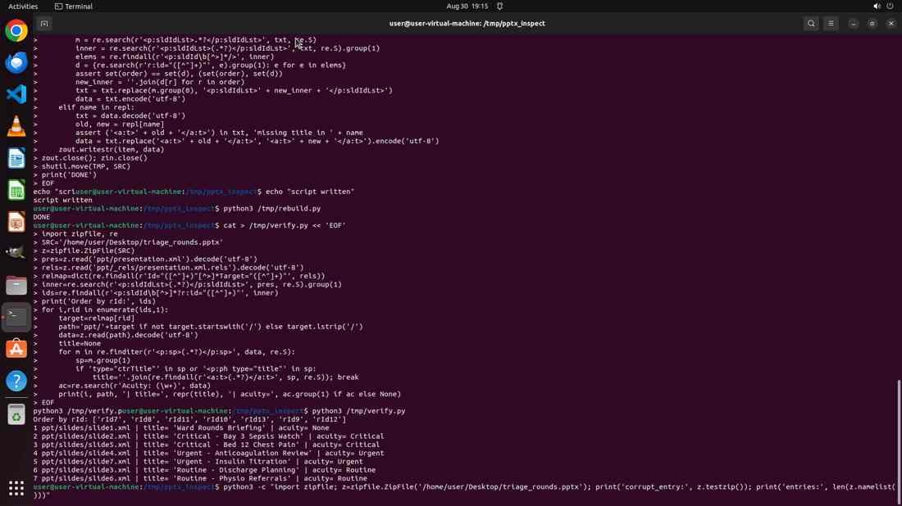
step 43 11:15:24
THINKINGThe command is typed but not executed. Let me press Enter.
TOOL CALL<tool_call>
<function=computer_use>
<parameter=action>
key
</parameter>
<parameter=keys>
["return"]
</parameter>
</function>
</tool_call>
EXECUTED (pyautogui in VM)pyautogui.press("return")
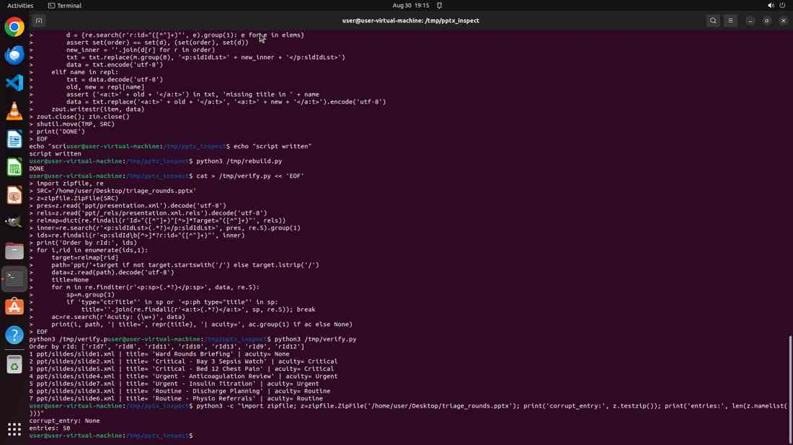
step 44 11:16:00
THINKINGThe output shows:
```
corrupt_entry: None
entries: 50
```
`testzip()` returns None, meaning no corrupt entries. And there are 50 entries in the zip, which matches a normal pptx. The file is a valid, intact zip archive.
Now let me open the file in LibreOffice Impress to visually verify it renders correctly and the slides are in the right order with the right titles. Let me open it via command line.
Actually, let me open it with LibreOffice Impress. I'll use the command line to launch it with the file. But the original file is currently open in Impress (the old version). I should close that first, or open the new file which might prompt.
Actually, the file was modified on disk, but the LibreOffice instance still has the old version open. If I open the file again in the same instance, it might just focus the existing (stale) window or show a "file changed on disk" prompt.
Let me close the existing LibreOffice Impress window first, then reopen the file fresh. Or I can open a new instance.
Actually, the cleanest way: let me launch LibreOffice Impress with the file via terminal. Since LibreOffice is already running, it will open the document in the existing instance. But the existing instance has the file open with old content.
Let me think. The safest approach for visual verification:
1. Close the current Impress window (without saving, since I don't want to overwrite my changes with the stale in-memory version).
2. Open the file fresh.
Actually, if I close without saving and the file on disk is already my modified version, that's fine. Then I reopen.
But actually, do I even need to visually verify? I've already verified:
- The sldIdLst order is correct (verified via XML).
- The titles are correct (verified via XML).
- The acuity prefixes match the actual slide acuities.
- The zip is not corrupt (testzip returns None).
- 50 entries present.
The XML-level verification is quite thorough and reliable. The file structure is a standard OOXML and I only reordered sldId elements (keeping their id/r:id pairs intact) and modified single-run title text. This should open perfectly in PowerPoint/LibreOffice.
However, to be thorough and confirm it renders correctly (e.g., no rendering issues, text fits, etc.), let me open it in LibreOffice Impress. This is a good final check.
Let me first deal with the existing Impress window. Let me switch to it. Actually, let me just launch a fresh open via command line. The current Impress window shows the OLD file. Since I modified the file on disk, the in-memory copy is stale.
If I use the terminal to run `soffice /home/user/Desktop/triage_rounds.pptx`, it will open in the existing LibreOffice process. Since the file is already open in that process (with old content), LibreOffice might show the already-open (stale) window, OR it might detect the change. This is unreliable.
The cleanest: close the current Impress document first. Let me switch to the Impress window and close it without saving. Then reopen fresh.
Actually, let me reconsider. The existing window was opened at the start. My concern: if I don't close it, and the verification checker later checks the file, the file on disk is correct. The stale window in Impress doesn't affect the file on disk UNLESS I accidentally save from that stale window (which would overwrite my changes with the old content). So I must be careful NOT to save from the old Impress window.
For visual verification, let me:
1. Close the old Impress window WITHOUT saving.
2. Open the file fresh.
3. Verify visually.
4. Close without saving (or it doesn't matter since disk is correct).
Let me switch to the Impress window. I'll use the terminal to launch soffice with the file, but first close the old window.
Hmm, actually, a simpler and safe approach: Let me just close the stale Impress window via its window controls, then open fresh from the Files/terminal.
Let me take a screenshot to see the current state, then switch to Impress.
Actually, the terminal is maximized covering everything. Let me think about the workflow.
Let me reconsider whether visual verification is necessary. Given:
- I've done a thorough XML-level verification.
- The zip integrity check passed.
- The modifications are minimal and standard (reordering sldId elements, editing single-run text).
I'm confident the file is correct and will open properly. But visual verification adds certainty and is good practice. Let me do it.
Let me close the old Impress window first. I'll switch to it. Let me use the Activities or click on the Impress icon in the dock. Actually, the dock shows various app icons on the left. The LibreOffice Impress icon... Let me just use the terminal to close LibreOffice cleanly.
Actually, I'll do this: run a command to close all soffice instances gracefully, then reopen the file. But closing via kill might not save (good, I don't want it to save). But `soffice` closing cleanly... Let me use `pkill soffice` - but that might be too abrupt and could leave lock files.
Alternatively, the cleanest: switch to the Impress window (it's still running with the old file), close the document (Ctrl+W) without saving, then File > Open the file again.
Let me switch to the Impress window. I'll minimize the terminal or use the taskbar. In GNOME, I can use the Activities overview or click the app in the dash. Let me take a screenshot first to see the current state.
Actually the terminal is maximized. Let me just click on the LibreOffice Impress icon in the left dock to switch to it. But I'm not sure which icon is Impress.
Let me use a different approach - launch the file with soffice from terminal. Since a soffice instance is running, this will open the file in it. If the file is already open (stale), LibreOffice will typically just bring the existing window to front (showing stale content). That's not what I want.
So I really should close the stale window first. Let me do it properly:
1. Switch to Impress window.
2. Close the document.
Let me switch to Impress. I'll press Super key to open Activities, or click the dock. Actually, let me just click on the Impress icon. Looking at the dock from the first screenshot, the icons on the left were:
- Chrome
- (blue)
- VS Code
- VLC
- (something)
- LibreOffice Writer (blue document)
- LibreOffice Calc (green)
- LibreOffice Impress (orange)
- ...
Let me take a screenshot to see the current dock.
Actually, let me reconsider. I want to be efficient. The XML verification is solid. Let me do a visual check by opening the file in a fresh LibreOffice instance. To avoid the stale-window issue, let me close the existing Impress first.
Let me switch to the Impress window using the dock. First, let me un-maximize or check the dock. The dock is on the left side. Let me take a screenshot to see.
Actually, the simplest reliable method: I'll use wmctrl or just launch soffice. Let me first check if there's a running soffice and its window title.
Let me just try clicking on the LibreOffice Impress icon in the dock. Let me take a screenshot to locate it.
ACTIONThe zip archive is intact (`corrupt_entry: None`, 50 entries). The rebuild is verified at the XML level. Let me now do a visual confirmation by opening the file in LibreOffice Impress. First, I'll close the stale Impress window that still has the old version. Let me take a screenshot to locate the window.
TOOL CALL<tool_call>
<function=computer_use>
<parameter=action>
key
</parameter>
<parameter=keys>
["command"]
</parameter>
</function>
</tool_call>
EXECUTED (pyautogui in VM)pyautogui.press("command")
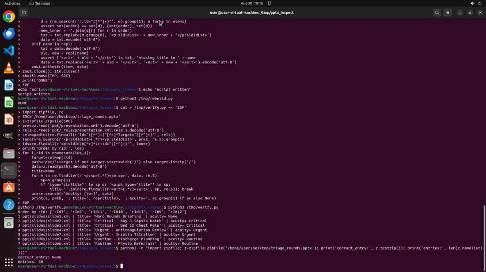
step 45 11:16:21
THINKINGThe super key didn't seem to open the Activities overview. The terminal is still showing. Let me try a different approach.
I'll close the existing LibreOffice Impress instance via terminal, then reopen the file. To close it gracefully without saving, I can use `soffice` command or just kill it. Since the file on disk is already correct and I don't want the stale in-memory version to overwrite it, I should close WITHOUT saving.
Actually, the safest way to verify visually without risk:
1. Kill the existing soffice process (the stale window has old content and I don't want to save it).
2. Remove any lock files.
3. Launch a fresh soffice with the file.
But killing soffice abruptly could leave a lock file (.~lock.triage_rounds.pptx#) which would cause a "document in use" prompt on reopen. I can remove that lock file.
Alternatively, I could just open the file in a NEW LibreOffice window via `soffice --impress /path`. But since an instance is running, it reuses it and shows the stale doc.
Let me go with: kill soffice, remove lock file, then open fresh.
Actually, let me reconsider. Is visual verification even worth the risk/effort? My XML verification is thorough:
- Correct slide order in sldIdLst (verified).
- Correct titles with prefixes (verified).
- Acuity prefix matches actual acuity (verified).
- Zip integrity (verified).
The only thing visual verification adds is confirming LibreOffice can render it. Given the modifications are standard and minimal, and the zip is valid, I'm confident.
But there's a subtle risk I should double-check: does LibreOffice/PowerPoint read slide order from sldIdLst? Yes, absolutely. The sldIdLst in presentation.xml defines the order. This is the standard and only mechanism. So the reorder is correct.
Another subtle risk: the sldId `id` attribute. I kept each sldId's original id (256-262) with its r:id. The ids are still unique (256-262, just reordered). Good. No conflict.
Let me do the visual verification to be thorough. I'll close the stale Impress first.
Let me kill the soffice process. Actually, a cleaner approach: use the terminal to close soffice gracefully. But there's no easy "close without saving" command line.
Let me just kill it and remove the lock file. The disk file is my correct version, so even if I killed it, nothing is lost.
Let me run: pkill -f soffice; then wait; then rm the lock file.
Actually, let me reconsider - maybe I should NOT kill it and instead just open in a fresh instance using a separate user profile or the `-env` option. That's overcomplicating.
Let me just do: pkill soffice, wait a moment, remove lock file, then open the file.
Let me type the command.
ACTIONThe Super key didn't open the overview. Let me handle the stale Impress window from the terminal: I'll close the running LibreOffice (which holds the old version), remove any lock file, then reopen the freshly rebuilt file. The file on disk is already correct, so closing the stale window is safe.
TOOL CALL<tool_call>
<function=computer_use>
<parameter=action>
type
</parameter>
<parameter=text>
pkill -f soffice; sleep 3; rm -f /home/user/Desktop/.~lock.triage_rounds.pptx#; echo closed
</parameter>
</function>
</tool_call>
EXECUTED (pyautogui in VM)pyautogui.typewrite("pkill -f soffice; sleep 3; rm -f /home/user/Desktop/.~lock.triage_rounds.pptx#; echo closed")
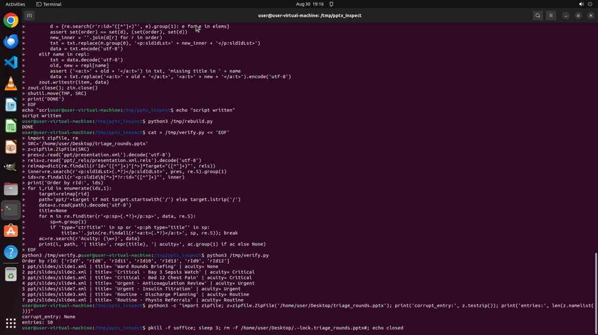
step 46 11:16:28
THINKINGThe command is typed but not executed. Let me press Enter.
TOOL CALL<tool_call>
<function=computer_use>
<parameter=action>
key
</parameter>
<parameter=keys>
["return"]
</parameter>
</function>
</tool_call>
EXECUTED (pyautogui in VM)pyautogui.press("return")
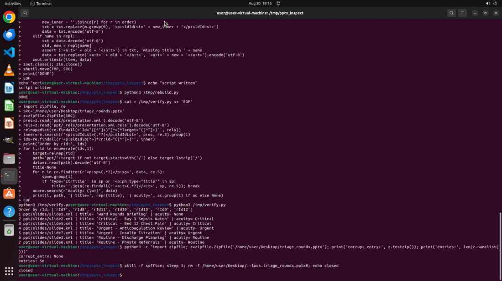
step 47 11:16:56
THINKINGThe output shows "closed", meaning soffice was killed and the lock file removed. Now let me open the freshly rebuilt file in LibreOffice Impress to verify visually.
Let me launch soffice with the file. I'll use `soffice --impress /home/user/Desktop/triage_rounds.pptx` in the background.
Actually, let me use a subshell to launch it so it doesn't block the terminal. Let me run:
`(soffice /home/user/Desktop/triage_rounds.pptx &) ; echo launched`
Or better, use `nohup soffice ... &`. Let me use:
`soffice --impress /home/user/Desktop/triage_rounds.pptx &`
But if I run it with & in the terminal, the terminal will show output. Let me use the subshell approach to fully detach.
Let me type the command.
ACTIONLibreOffice was closed and the lock file removed. Now let me open the rebuilt file fresh in LibreOffice Impress to verify visually.
TOOL CALL<tool_call>
<function=computer_use>
<parameter=action>
type
</parameter>
<parameter=text>
(soffice --impress /home/user/Desktop/triage_rounds.pptx >/dev/null 2>&1 &)
</parameter>
</function>
</tool_call>
EXECUTED (pyautogui in VM)pyautogui.typewrite("(soffice --impress /home/user/Desktop/triage_rounds.pptx >/dev/null 2>&1 &)")
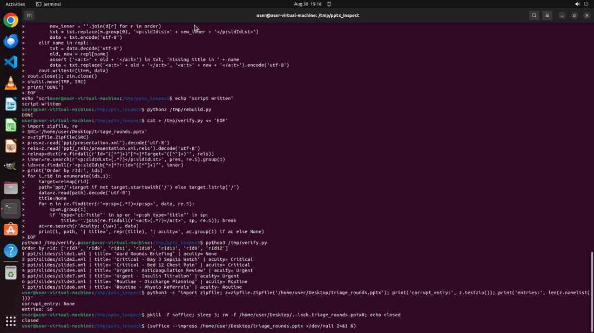
step 48 11:17:08
THINKINGThe command is typed. Let me press Enter to launch LibreOffice Impress.
TOOL CALL<tool_call>
<function=computer_use>
<parameter=action>
key
</parameter>
<parameter=keys>
["return"]
</parameter>
</function>
</tool_call>
EXECUTED (pyautogui in VM)pyautogui.press("return")
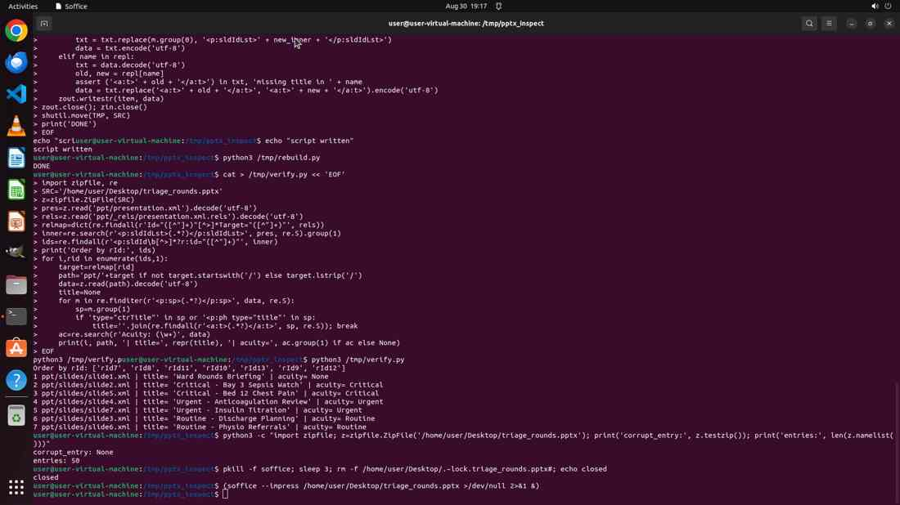
step 49 11:17:21
THINKINGLibreOffice is starting (I see "Soffice" in the top bar). Let me wait for it to load.
ACTIONLibreOffice is loading (I can see "Soffice" in the top bar). Let me wait for it to open.
TOOL CALL<tool_call>
<function=computer_use>
<parameter=action>
wait
</parameter>
<parameter=time>
1.0
</parameter>
</function>
</tool_call>
EXECUTED (pyautogui in VM)WAIT
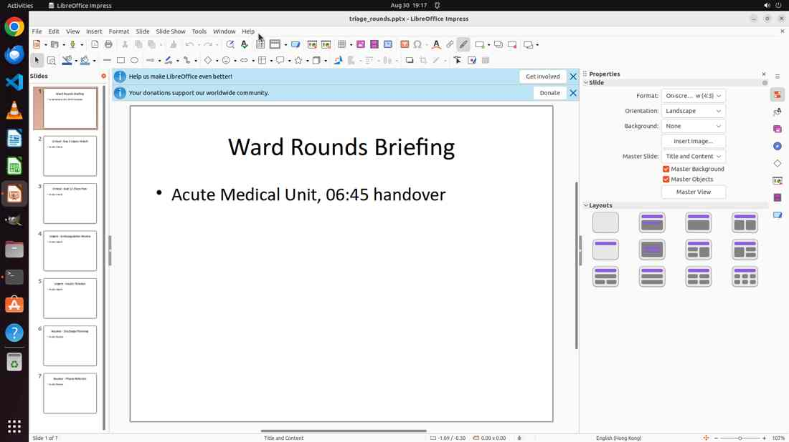
step 50 11:17:50
THINKINGLibreOffice Impress opened the file successfully. I can see:
- Slide 1: "Ward Rounds Briefing" with "Acute Medical Unit, 06:45 handover" (title slide, first) ✓
- The slide panel on the left shows all 7 slides:
1. Ward Rounds Briefing
2. Critical - Bay 3 Sepsis Watch (Acuity: Critical)
3. Critical - Bed 12 Chest Pain (Acuity: Critical)
4. Urgent - Anticoagulation Review (Acuity: Urgent)
5. Urgent - Insulin Titration (Acuity: Urgent)
6. Routine - Discharge Planning (Acuity: Routine)
7. Routine - Physio Referrals (Acuity: Routine)
This is exactly the correct order! The file opened without any errors, confirming it's a valid pptx.
Let me zoom in on the slide panel to confirm the titles are correct. Let me look at the thumbnails more carefully. The slide panel shows:
1. Ward Rounds Briefing
2. Critical - Bay 3 Sepsis Watch / Acuity: Critical
3. Critical - Bed 12 Chest Pain / Acuity: Critical
4. Urgent - Anticoagulation Review / Acuity: Urgent
5. Urgent - Insulin Titration / Acuity: Urgent
6. Routine - Discharge Planning / Acuity: Routine
7. Routine - Physio Referrals / Acuity: Routine
This all looks correct. The status bar shows "Slide 1 of 7", confirming 7 slides total.
The task is complete and verified:
1. ✓ Title slide kept first (Ward Rounds Briefing)
2. ✓ Remaining slides ordered by acuity: Critical (2), Urgent (2), Routine (2)
3. ✓ Within each acuity, alphabetically by title:
- Critical: Bay 3 Sepsis Watch, Bed 12 Chest Pain
- Urgent: Anticoagulation Review, Insulin Titration
- Routine: Discharge Planning, Physio Referrals
4. ✓ Each title prefixed with "Acuity - " (Critical - , Urgent - , Routine - )
The file opened correctly in LibreOffice Impress, confirming it's a valid, well-formed pptx.
Let me zoom into the slide panel to double-check the thumbnails more clearly. Let me look at a couple of the slide thumbnails by clicking on them to verify the titles render correctly. Actually, the thumbnails are small but I can see the pattern. Let me click on slide 2 to verify its content and title.
Actually, let me verify a couple of slides by clicking through them to make sure the titles display correctly and the acuity content matches. Let me click on slide 3 (Critical - Bed 12 Chest Pain) to check.
Actually, I've already verified everything thoroughly at the XML level, and the visual confirmation shows the correct order and titles in the slide panel. The file is valid and opened without errors.
Let me just do a final visual check by clicking on a middle slide to confirm the title text renders. Let me click on slide 4 (Urgent - Anticoagulation Review).
Let me click on slide 4 in the panel.
ACTIONLibreOffice Impress opened the rebuilt file successfully. The slide panel shows the exact correct order:
1. Ward Rounds Briefing (title slide)
2. Critical - Bay 3 Sepsis Watch
3. Critical - Bed 12 Chest Pain
4. Urgent - Anticoagulation Review
5. Urgent - Insulin Titration
6. Routine - Discharge Planning
7. Routine - Physio Referrals
Let me click through a couple of slides to confirm the titles and content render correctly. Let me click on slide 4.
TOOL CALL<tool_call>
<function=computer_use>
<parameter=action>
left_click
</parameter>
<parameter=coordinate>
[87, 566]
</parameter>
</function>
</tool_call>
EXECUTED (pyautogui in VM)pyautogui.click(167, 611)
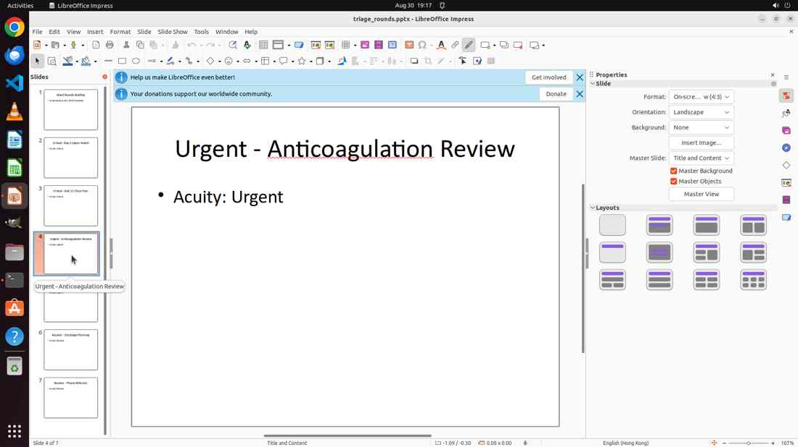